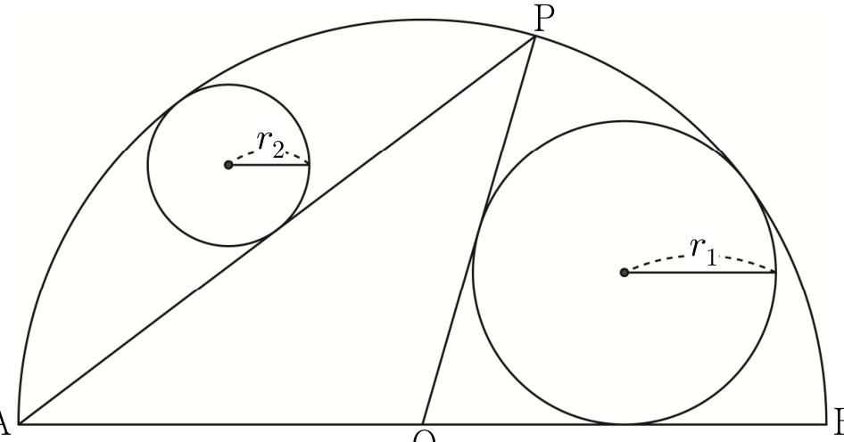
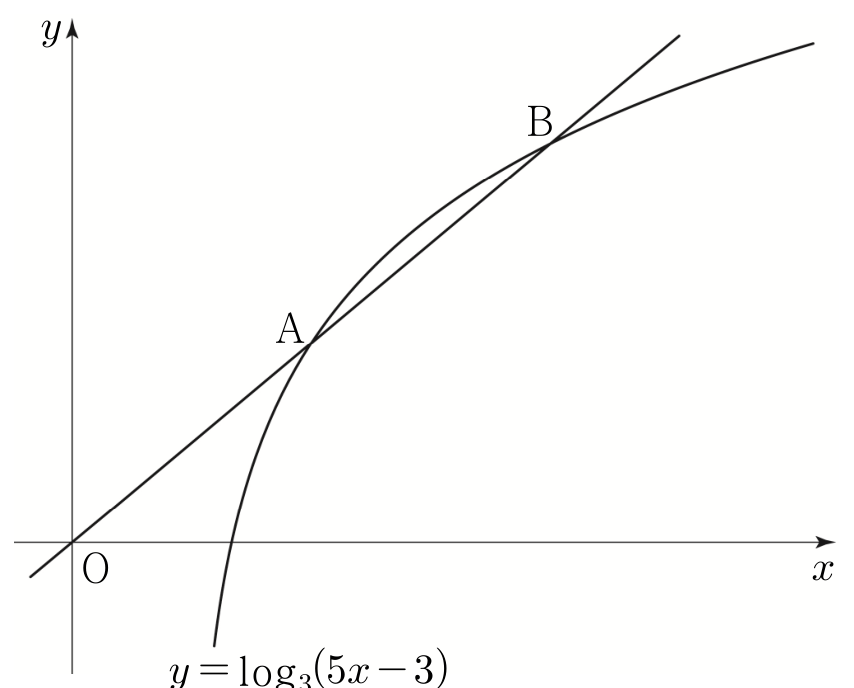

원본 풀이 (내부용)[출제의도] 삼각함수의 그래프 이해하기
모든 실수 \(x\)에 대하여 \(-1\le\cos x\le1\)
\(
-1\le\cos\left(x+\frac\pi2\right)\le1
\)
\(
-2\le2\cos\left(x+\frac\pi2\right)\le2
\)
\(
1\le2\cos\left(x+\frac\pi2\right)+3\le5
\)
이므로 함수
\(
f(x)=2\cos\left(x+\frac\pi2\right)+3
\)
의 최솟값은 \(1\).
생성기 숫자판 1/6 · G2M1-02#10함수 $f\left(x\right)=4\cos\left(x+\frac{\pi}{3}\right)+2$의 최솟값으로 옳은 것을 고르세요.
원본 (내부용)함수 $y=f ( x )$의 그래프가 그림과 같다. $\mathrm{O}$ $1$ $2$ $y$ $x$ $1$ $y=f ( x )$ $f ( 0 ) + \lim_{x \to 1+} {f ( x )}$의 값은? [$3$점]
① $1$② $2$③ $3$④ $4$⑤ $5$
원본 정답 ③
원본 풀이 (내부용)[출제의도] 함수의 극한 이해하기
\(
f(0)=1,\qquad \lim_{x\to1+}f(x)=2
\)
이므로
\(
f(0)+\lim_{x\to1+}f(x)=1+2=3
\)
생성기 숫자판 1/5 · G2f-15#1함수 $y=f\left(x\right)$의 그래프가 그림과 같습니다. $f\left(2\right)+\lim_{x\to 0^{+}}f\left(x\right)$의 값으로 옳은 것을 고르세요.
① $0$② $1$③ $2$④ $3$⑤ $4$
정답③ $2$ $f\left(2\right)=1$ $x\to 0^{+}$일 때 $f\left(x\right)\to 1$ 따라서 구하는 값은 $1+1=2$
숫자: 원본 1 2 1 0 1 3 → 쌍둥이 2 0 · 같은 수: 0 2
생성기 숫자판 2/5 · G2f-15#1함수 $y=f\left(x\right)$의 그래프가 그림과 같습니다. $f\left(3\right)+\lim_{x\to 0^{-}}f\left(x\right)$의 값으로 옳은 것을 고르세요.
① $2$② $3$③ $4$④ $5$⑤ $6$
정답③ $4$ $f\left(3\right)=1$ $x\to 0^{-}$일 때 $f\left(x\right)\to 3$ 따라서 구하는 값은 $1+3=4$
숫자: 원본 1 2 1 0 1 3 → 쌍둥이 3 0 · 같은 수: 0 3
생성기 숫자판 3/5 · G2f-15#1함수 $y=f\left(x\right)$의 그래프가 그림과 같습니다. $f\left(0\right)+\lim_{x\to 3^{-}}f\left(x\right)$의 값으로 옳은 것을 고르세요.
① $0$② $1$③ $2$④ $3$⑤ $4$
정답③ $2$ $f\left(0\right)=2$ $x\to 3^{-}$일 때 $f\left(x\right)\to 0$ 따라서 구하는 값은 $2+0=2$
숫자: 원본 1 2 1 0 1 3 → 쌍둥이 0 3 · 같은 수: 0 3
생성기 숫자판 4/5 · G2f-15#1함수 $y=f\left(x\right)$의 그래프가 그림과 같습니다. $f\left(0\right)+\lim_{x\to 3^{+}}f\left(x\right)$의 값으로 옳은 것을 고르세요.
① $1$② $2$③ $3$④ $4$⑤ $5$
정답③ $3$ $f\left(0\right)=1$ $x\to 3^{+}$일 때 $f\left(x\right)\to 2$ 따라서 구하는 값은 $1+2=3$
숫자: 원본 1 2 1 0 1 3 → 쌍둥이 0 3 · 같은 수: 0 3
생성기 숫자판 5/5 · G2f-15#1함수 $y=f\left(x\right)$의 그래프가 그림과 같습니다. $f\left(1\right)+\lim_{x\to 0^{-}}f\left(x\right)$의 값으로 옳은 것을 고르세요.
① $2$② $3$③ $4$④ $5$⑤ $6$
정답③ $4$ $f\left(1\right)=1$ $x\to 0^{-}$일 때 $f\left(x\right)\to 3$ 따라서 구하는 값은 $1+3=4$
숫자: 원본 1 2 1 0 1 3 → 쌍둥이 1 0 · 같은 수: 0 1
8. 2019년 9월 나형 8번 · 3점 · 수학Ⅰ 지수·로그 · G2M1-04#3
원본 (내부용)정의역이 $\{ x | 1 \le x \le 3 \}$인 함수 $f ( x ) =5^{ x-2} +3$의 최댓값은? [$3$점]
① $4$② $5$③ $6$④ $7$⑤ $8$
원본 정답 ⑤
원본 풀이 (내부용)[출제의도] 지수함수의 그래프 이해하기
함수 \(f(x)=5^{x-2}+3\)은 \(x\)의 값이 증가함에 따라 함수값이 증가한다.
\(\{x\mid1\le x\le3\}\)에서 함수 \(f(x)\)의 최댓값은
\(
f(3)=5^{3-2}+3=5+3=8
\)
생성기 숫자판 1/6 · G2M1-04#3$1\le x\le 2$에서 함수 $f\left(x\right)=\left(\frac{1}{3}\right)^{-x-2}+5$의 최댓값으로 옳은 것을 고르세요.
① $32$② $85$③ $86$④ $87$⑤ $88$
정답③ $86$ 밑 $\frac{1}{3}$이 $0$과 $1$ 사이이고 지수 $-x-2$는 $x$가 커질수록 작아지므로 함수 $f\left(x\right)$는 $x$의 값이 커질수록 커집니다. 따라서 $x=2$일 때 최댓값을 가지므로 $f\left(2\right)=\left(\frac{1}{3}\right)^{-4}+5$ $=81+5$ $=86$
생성기 숫자판 5/6 · G2M1-04#3$1\le x\le 3$에서 함수 $f\left(x\right)=2^{x+3}+6$의 최솟값으로 옳은 것을 고르세요.
① $20$② $21$③ $22$④ $23$⑤ $70$
정답③ $22$ 밑 $2$가 $1$보다 크고 지수 $x+3$은 $x$가 커질수록 커지므로 함수 $f\left(x\right)$는 $x$의 값이 커질수록 커집니다. 따라서 $x=1$일 때 최솟값을 가지므로 $f\left(1\right)=2^{4}+6$ $=16+6$ $=22$
숫자: 원본 1 3 5 2 3 3 → 쌍둥이 1 3 2 3 6 · 같은 수: 1 2 3
생성기 숫자판 6/6 · G2M1-04#3$1\le x\le 2$에서 함수 $f\left(x\right)=2^{x-2}-1$의 최댓값으로 옳은 것을 고르세요.
① $-\frac{1}{2}$② $0$③ $1$④ $2$⑤ $3$
정답② $0$ 밑 $2$가 $1$보다 크고 지수 $x-2$는 $x$가 커질수록 커지므로 함수 $f\left(x\right)$는 $x$의 값이 커질수록 커집니다. 따라서 $x=2$일 때 최댓값을 가지므로 $f\left(2\right)=2^{0}-1$ $=1-1$ $=0$
원본 (내부용)$0 \le x \le \pi$일 때, 방정식 $2sinx-1=0$ 의 모든 해의 합은? [$3$점]
① $\frac{\pi }{2}$② $\pi$③ $\frac{3}{2} \pi$④ $2\pi$⑤ $\frac{5}{2} \pi$
원본 정답 ②
원본 풀이 (내부용)[출제의도] 삼각함수의 그래프 이해하기
\(
\sin x=\frac12\quad(0\le x\le\pi)
\)
이므로
\(
x=\frac\pi6\quad\text{또는}\quad x=\frac{5\pi}{6}
\)
따라서 모든 해의 합은
\(
\frac\pi6+\frac{5\pi}{6}=\pi
\)
생성기 숫자판 1/6 · G2M1-02#8$0\le x\le \pi$일 때, 방정식 $2\sin x-1=0$의 모든 해의 합으로 옳은 것을 고르세요.
① $\frac{\pi}{2}$② $\pi$③ $\frac{3}{2}\pi$④ $2\pi$⑤ $\frac{5}{2}\pi$
정답② $\pi$ $2\sin x-1=0$에서 $\sin x=\frac{1}{2}$ $0\le x\le \pi$에서 $x=\frac{\pi}{6}$ 또는 $x=\frac{5}{6}\pi$ 따라서 모든 해의 합은 $\pi$
숫자: 원본 0 2 1 0 3 → 쌍둥이 0 2 1 0 · 같은 수: 0 1 2
생성기 숫자판 2/6 · G2M1-02#8$0\le x\le 3\pi$일 때, 방정식 $2\cos x-1=0$의 모든 해의 합으로 옳은 것을 고르세요.
① $\frac{10}{3}\pi$② $\frac{23}{6}\pi$③ $\frac{13}{3}\pi$④ $\frac{29}{6}\pi$⑤ $\frac{16}{3}\pi$
정답③ $\frac{13}{3}\pi$ $2\cos x-1=0$에서 $\cos x=\frac{1}{2}$ $0\le x\le 3\pi$에서 $x=\frac{\pi}{3}$ 또는 $x=\frac{5}{3}\pi$ 또는 $x=\frac{7}{3}\pi$ 따라서 모든 해의 합은 $\frac{13}{3}\pi$
숫자: 원본 0 2 1 0 3 → 쌍둥이 0 3 2 1 0 · 같은 수: 0 1 2 3
생성기 숫자판 3/6 · G2M1-02#8$0\le x\le 3\pi$일 때, 방정식 $2\cos x+1=0$의 모든 해의 합으로 옳은 것을 고르세요.
① $\frac{11}{3}\pi$② $\frac{25}{6}\pi$③ $\frac{14}{3}\pi$④ $\frac{31}{6}\pi$⑤ $\frac{17}{3}\pi$
정답③ $\frac{14}{3}\pi$ $2\cos x+1=0$에서 $\cos x=-\frac{1}{2}$ $0\le x\le 3\pi$에서 $x=\frac{2}{3}\pi$ 또는 $x=\frac{4}{3}\pi$ 또는 $x=\frac{8}{3}\pi$ 따라서 모든 해의 합은 $\frac{14}{3}\pi$
숫자: 원본 0 2 1 0 3 → 쌍둥이 0 3 2 1 0 · 같은 수: 0 1 2 3
생성기 숫자판 4/6 · G2M1-02#8$0\le x\le 3\pi$일 때, 방정식 $\sqrt{2}\cos x+1=0$의 모든 해의 합으로 옳은 것을 고르세요.
① $\frac{15}{4}\pi$② $\frac{17}{4}\pi$③ $\frac{19}{4}\pi$④ $\frac{21}{4}\pi$⑤ $\frac{23}{4}\pi$
정답③ $\frac{19}{4}\pi$ $\sqrt{2}\cos x+1=0$에서 $\cos x=-\frac{\sqrt{2}}{2}$ $0\le x\le 3\pi$에서 $x=\frac{3}{4}\pi$ 또는 $x=\frac{5}{4}\pi$ 또는 $x=\frac{11}{4}\pi$ 따라서 모든 해의 합은 $\frac{19}{4}\pi$
숫자: 원본 0 2 1 0 3 → 쌍둥이 0 3 2 1 0 · 같은 수: 0 1 2 3
생성기 숫자판 5/6 · G2M1-02#8$0\le x\le 2\pi$일 때, 방정식 $\sqrt{2}\cos x+1=0$의 모든 해의 합으로 옳은 것을 고르세요.
① $\pi$② $\frac{3}{2}\pi$③ $2\pi$④ $\frac{5}{2}\pi$⑤ $3\pi$
정답③ $2\pi$ $\sqrt{2}\cos x+1=0$에서 $\cos x=-\frac{\sqrt{2}}{2}$ $0\le x\le 2\pi$에서 $x=\frac{3}{4}\pi$ 또는 $x=\frac{5}{4}\pi$ 따라서 모든 해의 합은 $2\pi$
숫자: 원본 0 2 1 0 3 → 쌍둥이 0 2 2 1 0 · 같은 수: 0 1 2
생성기 숫자판 6/6 · G2M1-02#8$0\le x\le 2\pi$일 때, 방정식 $2\sin x+1=0$의 모든 해의 합으로 옳은 것을 고르세요.
① $2\pi$② $\frac{5}{2}\pi$③ $3\pi$④ $\frac{7}{2}\pi$⑤ $4\pi$
정답③ $3\pi$ $2\sin x+1=0$에서 $\sin x=-\frac{1}{2}$ $0\le x\le 2\pi$에서 $x=\frac{7}{6}\pi$ 또는 $x=\frac{11}{6}\pi$ 따라서 모든 해의 합은 $3\pi$
숫자: 원본 0 2 1 0 3 → 쌍둥이 0 2 2 1 0 · 같은 수: 0 1 2
11. 2019년 9월 나형 11번 · 3점 · 수학Ⅰ 수열 · G2M6-03#15
원본 (내부용)자연수 $n$에 대하여 직선 $y=-2x+n^{2} +1$의 $x$절편을 $x_{n}$이라 할 때, $\sum_{n=1}^{8} x_{n}$의 값은? [$3$점]
① $104$② $105$③ $106$④ $107$⑤ $108$
원본 정답 ③
원본 풀이 (내부용)[출제의도] 수열의 합을 활용하여 문제 해결하기
\(
x_n=\frac12(n^2+1)
\)
이므로
\(
\begin{aligned}
\sum_{n=1}^{8}\frac12(n^2+1)
&=\frac12\left(\sum_{n=1}^{8}n^2+\sum_{n=1}^{8}1\right)\\
&=\frac12\left(\frac{8\times9\times17}{6}+8\right)\\
&=106
\end{aligned}
\)
생성기 숫자판 1/6 · G2M6-03#15자연수 $n$에 대하여 직선 $y=-3x+n^{2}-2$의 $x$절편을 $x_{n}$이라 할 때, $\sum_{n=1}^{9}x_{n}$의 값으로 옳은 것을 고르세요.
원본 풀이 (내부용)[출제의도] 로그함수의 그래프 이해하기
\(
g(x)=\log_2 3x=\log_2 x+\log_2 3
=f(x)+\log_2 3
\)
이므로 함수 \(g(x)=\log_2 3x\)의 그래프는 함수 \(f(x)=\log_2 x\)의 그래프를 \(y\)축의 방향으로 \(\log_2 3\)만큼 평행이동한 것이다.
점 \((3,0)\)을 \(E\)라 하자.
함수 \(y=g(x)\)의 그래프와 선분 \(DB\), 선분 \(BC\)로 둘러싸인 부분의 넓이는 함수 \(y=f(x)\)의 그래프와 선분 \(AE\), 선분 \(EB\)로 둘러싸인 부분의 넓이와 같다.
따라서 두 함수 \(y=f(x)\), \(y=g(x)\)의 그래프와 선분 \(AD\), 선분 \(BC\)로 둘러싸인 부분의 넓이는 사각형 \(AEBD\)의 넓이와 같다.
\(
\overline{AD}=\log_2 3,\qquad \overline{AE}=2
\)
이므로 넓이는
\(
2\times\log_2 3=2\log_2 3
\)
## 고 2
쌍둥이 1/5 · 4점 쌍둥이그림과 같이 두 함수 $f\left(x\right)=\log_{2}x$, $g\left(x\right)=\log_{2}5x$의 그래프 위에 네 점 $A\left(1,f\left(1\right)\right)$, $B\left(5,f\left(5\right)\right)$, $C\left(5,g\left(5\right)\right)$, $D\left(1,g\left(1\right)\right)$이 있습니다. 두 함수 $y=f\left(x\right)$, $y=g\left(x\right)$의 그래프와 선분 $AD$, 선분 $BC$로 둘러싸인 부분의 넓이로 옳은 것을 고르세요.
① $3\log_{2}5$② $9$③ $4\log_{2}5$④ $10$⑤ $5\log_{2}5$
정답③ $4\log_{2}5$ $g\left(x\right)=\log_{2}5x=\log_{2}x+\log_{2}5=f\left(x\right)+\log_{2}5$이므로 $y=g\left(x\right)$의 그래프는 $y=f\left(x\right)$의 그래프를 $y$축의 방향으로 $\log_{2}5$만큼 평행이동한 것 $A\left(1,0\right)$, $B\left(5,\log_{2}5\right)$, $D\left(1,\log_{2}5\right)$이므로 점 $E\left(5,0\right)$이라 하면 $y=g\left(x\right)$의 그래프와 선분 $DB$, 선분 $BC$로 둘러싸인 부분의 넓이는 $y=f\left(x\right)$의 그래프와 선분 $AE$, 선분 $EB$로 둘러싸인 부분의 넓이와 같음 따라서 구하는 넓이는 사각형 $AEBD$의 넓이와 같고, $\overline{AE}=4$, $\overline{AD}=\log_{2}5$이므로 $4\times\log_{2}5=4\log_{2}5$
쌍둥이 2/5 · 4점 쌍둥이그림과 같이 두 함수 $f\left(x\right)=\log_{3}x$, $g\left(x\right)=\log_{3}4x$의 그래프 위에 네 점 $A\left(1,f\left(1\right)\right)$, $B\left(4,f\left(4\right)\right)$, $C\left(4,g\left(4\right)\right)$, $D\left(1,g\left(1\right)\right)$이 있습니다. 두 함수 $y=f\left(x\right)$, $y=g\left(x\right)$의 그래프와 선분 $AD$, 선분 $BC$로 둘러싸인 부분의 넓이로 옳은 것을 고르세요.
① $2\log_{3}4$② $3$③ $3\log_{3}4$④ $4$⑤ $4\log_{3}4$
정답③ $3\log_{3}4$ $g\left(x\right)=\log_{3}4x=\log_{3}x+\log_{3}4=f\left(x\right)+\log_{3}4$이므로 $y=g\left(x\right)$의 그래프는 $y=f\left(x\right)$의 그래프를 $y$축의 방향으로 $\log_{3}4$만큼 평행이동한 것 $A\left(1,0\right)$, $B\left(4,\log_{3}4\right)$, $D\left(1,\log_{3}4\right)$이므로 점 $E\left(4,0\right)$이라 하면 $y=g\left(x\right)$의 그래프와 선분 $DB$, 선분 $BC$로 둘러싸인 부분의 넓이는 $y=f\left(x\right)$의 그래프와 선분 $AE$, 선분 $EB$로 둘러싸인 부분의 넓이와 같음 따라서 구하는 넓이는 사각형 $AEBD$의 넓이와 같고, $\overline{AE}=3$, $\overline{AD}=\log_{3}4$이므로 $3\times\log_{3}4=3\log_{3}4$
쌍둥이 3/5 · 4점 쌍둥이그림과 같이 두 함수 $f\left(x\right)=\log_{4}x$, $g\left(x\right)=\log_{4}3x$의 그래프 위에 네 점 $A\left(1,f\left(1\right)\right)$, $B\left(3,f\left(3\right)\right)$, $C\left(3,g\left(3\right)\right)$, $D\left(1,g\left(1\right)\right)$이 있습니다. 두 함수 $y=f\left(x\right)$, $y=g\left(x\right)$의 그래프와 선분 $AD$, 선분 $BC$로 둘러싸인 부분의 넓이로 옳은 것을 고르세요.
① $\log_{4}3$② $1$③ $2\log_{4}3$④ $2$⑤ $3\log_{4}3$
정답③ $2\log_{4}3$ $g\left(x\right)=\log_{4}3x=\log_{4}x+\log_{4}3=f\left(x\right)+\log_{4}3$이므로 $y=g\left(x\right)$의 그래프는 $y=f\left(x\right)$의 그래프를 $y$축의 방향으로 $\log_{4}3$만큼 평행이동한 것 $A\left(1,0\right)$, $B\left(3,\log_{4}3\right)$, $D\left(1,\log_{4}3\right)$이므로 점 $E\left(3,0\right)$이라 하면 $y=g\left(x\right)$의 그래프와 선분 $DB$, 선분 $BC$로 둘러싸인 부분의 넓이는 $y=f\left(x\right)$의 그래프와 선분 $AE$, 선분 $EB$로 둘러싸인 부분의 넓이와 같음 따라서 구하는 넓이는 사각형 $AEBD$의 넓이와 같고, $\overline{AE}=2$, $\overline{AD}=\log_{4}3$이므로 $2\times\log_{4}3=2\log_{4}3$
쌍둥이 4/5 · 4점 쌍둥이그림과 같이 두 함수 $f\left(x\right)=\log_{2}x$, $g\left(x\right)=\log_{2}6x$의 그래프 위에 네 점 $A\left(1,f\left(1\right)\right)$, $B\left(6,f\left(6\right)\right)$, $C\left(6,g\left(6\right)\right)$, $D\left(1,g\left(1\right)\right)$이 있습니다. 두 함수 $y=f\left(x\right)$, $y=g\left(x\right)$의 그래프와 선분 $AD$, 선분 $BC$로 둘러싸인 부분의 넓이로 옳은 것을 고르세요.
① $4\log_{2}6$② $12$③ $5\log_{2}6$④ $13$⑤ $6\log_{2}6$
정답③ $5\log_{2}6$ $g\left(x\right)=\log_{2}6x=\log_{2}x+\log_{2}6=f\left(x\right)+\log_{2}6$이므로 $y=g\left(x\right)$의 그래프는 $y=f\left(x\right)$의 그래프를 $y$축의 방향으로 $\log_{2}6$만큼 평행이동한 것 $A\left(1,0\right)$, $B\left(6,\log_{2}6\right)$, $D\left(1,\log_{2}6\right)$이므로 점 $E\left(6,0\right)$이라 하면 $y=g\left(x\right)$의 그래프와 선분 $DB$, 선분 $BC$로 둘러싸인 부분의 넓이는 $y=f\left(x\right)$의 그래프와 선분 $AE$, 선분 $EB$로 둘러싸인 부분의 넓이와 같음 따라서 구하는 넓이는 사각형 $AEBD$의 넓이와 같고, $\overline{AE}=5$, $\overline{AD}=\log_{2}6$이므로 $5\times\log_{2}6=5\log_{2}6$
쌍둥이 5/5 · 4점 쌍둥이그림과 같이 두 함수 $f\left(x\right)=\log_{3}x$, $g\left(x\right)=\log_{3}5x$의 그래프 위에 네 점 $A\left(1,f\left(1\right)\right)$, $B\left(5,f\left(5\right)\right)$, $C\left(5,g\left(5\right)\right)$, $D\left(1,g\left(1\right)\right)$이 있습니다. 두 함수 $y=f\left(x\right)$, $y=g\left(x\right)$의 그래프와 선분 $AD$, 선분 $BC$로 둘러싸인 부분의 넓이로 옳은 것을 고르세요.
① $3\log_{3}5$② $5$③ $4\log_{3}5$④ $6$⑤ $5\log_{3}5$
정답③ $4\log_{3}5$ $g\left(x\right)=\log_{3}5x=\log_{3}x+\log_{3}5=f\left(x\right)+\log_{3}5$이므로 $y=g\left(x\right)$의 그래프는 $y=f\left(x\right)$의 그래프를 $y$축의 방향으로 $\log_{3}5$만큼 평행이동한 것 $A\left(1,0\right)$, $B\left(5,\log_{3}5\right)$, $D\left(1,\log_{3}5\right)$이므로 점 $E\left(5,0\right)$이라 하면 $y=g\left(x\right)$의 그래프와 선분 $DB$, 선분 $BC$로 둘러싸인 부분의 넓이는 $y=f\left(x\right)$의 그래프와 선분 $AE$, 선분 $EB$로 둘러싸인 부분의 넓이와 같음 따라서 구하는 넓이는 사각형 $AEBD$의 넓이와 같고, $\overline{AE}=4$, $\overline{AD}=\log_{3}5$이므로 $4\times\log_{3}5=4\log_{3}5$
원본 (내부용)$2$ 이상의 자연수 $n$에 대하여 $\log_{ n } 4 \times \log_{ 2 } 9$ 의 값이 자연수가 되도록 하는 모든 $n$의 값의 합은? [$4$점]
① $93$② $94$③ $95$④ $96$⑤ $97$
원본 정답 ①
원본 풀이 (내부용)[출제의도] 로그의 성질을 활용하여 문제 해결하기
\(
\log_n4\times\log_2 9
=\frac{\log4}{\log n}\times\frac{\log9}{\log2}
=\frac{4\log3}{\log n}
\)
\(
=4\log_n3
\)
\(4\log_n3=m\) (\(m\)은 자연수)이라 하자.
\(
n=(3^4)^{\frac1m}
\)
이므로
\(m=1\)일 때, \(n=81\)
\(m=2\)일 때, \(n=9\)
\(m=4\)일 때, \(n=3\)
따라서 모든 \(n\)의 값의 합은
\(
81+9+3=93
\)
쌍둥이 1/5 · 4점 쌍둥이$2$ 이상의 자연수 $n$에 대하여 $\log_{n}8\times\log_{2}5$의 값이 자연수가 되도록 하는 모든 $n$의 값의 합으로 옳은 것을 고르세요.
쌍둥이 4/5 · 4점 쌍둥이$2$ 이상의 자연수 $n$에 대하여 $\log_n8\times\log_2 9$의 값이 자연수가 되도록 하는 모든 $n$의 개수를 구하세요.
① $2$② $3$③ $4$④ $5$⑤ $6$
정답③ $4$ $\log_n8\times\log_2 9=3\log_n2\times2\log_2 3=6\log_n3$ $6\log_n3=k$라 두면 $n=3^{6/k}$이고 자연수가 되는 $k$는 $6$의 약수 $1,2,3,6$이다. $n=729,27,9,3$으로 네 개이다.
숫자: 원본 2 4 2 9 4 → 쌍둥이 2 8 2 9 · 같은 수: 2 9
쌍둥이 5/5 · 4점 쌍둥이$2$ 이상의 자연수 $n$에 대하여 $\log_n16\times\log_2 3$의 값이 자연수가 되도록 하는 $n$의 최댓값을 구하세요.
① $27$② $54$③ $72$④ $81$⑤ $108$
정답④ $81$ $\log_n16\times\log_2 3=4\log_n2\times\log_2 3=4\log_n3$ $4\log_n3=k$라 하면 $n=3^{4/k}$이며 자연수인 경우는 $k=1,2,4$로 각각 $81,9,3$이다. 따라서 최댓값은 $81$
숫자: 원본 2 4 2 9 4 → 쌍둥이 2 16 2 3 · 같은 수: 2
18. 2019년 9월 나형 18번 · 4점 · 수학Ⅰ 수열 · 4점 쌍둥이
원본 (내부용)일반항이 $a_{n} =n^{2}$인 수열 $\{ a_{n} \}$의 첫째항부터 제$n$항까지의 합을 $S_{n}$이라 하자. 다음은 모든 자연수 $n$에 대하여 $(n+1)S_{n} - \sum_{k=1}^{n} S_{k} = \sum_{k=1}^{n} k^{3}$ $\cdots \cdots (＊)$ 이 성립함을 수학적 귀납법으로 증명한 것이다. (i) $n=1$일 때, (좌변)$=2S_{1} -S_{1} =1$, (우변)$=1$이므로 (＊)이 성립한다. (ii) $n=m$일 때 (＊)이 성립한다고 가정하면 $(m+1)S_{m} - \sum_{k=1}^{m} S_{k} = \sum_{k=1}^{m} k^{3}$이다. $n=m+1$일 때 (＊)이 성립함을 보이자. $(m+2)S_{m+1} - \sum_{k=1}^{m+1} S_{k}$ $= {\boxed{(가)}} S_{m+1} - \sum_{k=1}^{m} S_{k}$ $= {\boxed{(가)}} S_{m} +$ ${\boxed{(나)}}$$- \sum_{k=1}^{m} S_{k}$ $= \sum_{k=1}^{m+1} k^{3}$이다. 따라서 $n=m+1$일 때도 (＊)이 성립한다. (i), (ii)에 의하여 주어진 식은 모든 자연수 $n$에 대하여 성립한다. 위의 (가), (나)에 알맞은 식을 각각 $f(m)$, $g(m)$이라 할 때, $f(2)+g(1)$의 값은? [$4$점]
① $7$② $8$③ $9$④ $10$⑤ $11$
원본 정답 ⑤
원본 풀이 (내부용)[출제의도] 수학적 귀납법을 활용하여 추론하기
일반항이 \(a_n=n^2\)인 수열 \(\{a_n\}\)의 첫째항부터 제 \(n\)항까지의 합을 \(S_n\)이라 하자.
다음은 모든 자연수 \(n\)에 대하여
\(
(n+1)S_n-\sum_{k=1}^{n}S_k=\sum_{k=1}^{n}k^3
\qquad\cdots\cdots(*)
\)
이 성립함을 수학적 귀납법으로 증명한 것이다.
**(i) \(n=1\)일 때,**
(좌변) \(=2S_1-S_1=1\), (우변) \(=1\)이므로 \((*)\)이 성립한다.
**(ii) \(n=m\)일 때 \((*)\)이 성립한다고 가정하면**
\(
(m+1)S_m-\sum_{k=1}^{m}S_k=\sum_{k=1}^{m}k^3
\)
이다.
\(n=m+1\)일 때 \((*)\)이 성립함을 보이자.
\(
\begin{aligned}
&(m+2)S_{m+1}-\sum_{k=1}^{m+1}S_k\\
&=(m+2)S_{m+1}
-\left(\sum_{k=1}^{m}S_k+S_{m+1}\right)\\
&=(m+1)S_{m+1}-\sum_{k=1}^{m}S_k\\
&=(m+1)(S_m+a_{m+1})-\sum_{k=1}^{m}S_k\\
&=(m+1)S_m+(m+1)^3-\sum_{k=1}^{m}S_k\\
&=\sum_{k=1}^{m}k^3+(m+1)^3\\
&=\sum_{k=1}^{m+1}k^3
\end{aligned}
\)
따라서 \(n=m+1\)일 때도 \((*)\)이 성립한다.
(i), (ii)에 의하여 주어진 식은 모든 자연수 \(n\)에 대하여 성립한다.
\(
f(m)=m+1,\qquad g(m)=(m+1)^3
\)
\(
f(2)+g(1)=11
\)
쌍둥이 1/5 · 4점 쌍둥이일반항이 $a_n=n^6$인 수열 $\{a_n\}$의 첫째항부터 제$n$항까지의 합을 $S_n$이라 하자. 다음은 모든 자연수 $n$에 대하여 $(n+1)S_n-\sum_{k=1}^n S_k=\sum_{k=1}^n k^{7}$ 가 성립함을 수학적 귀납법으로 증명한 것이다. (i) $n=1$일 때 좌변과 우변은 모두 $1$이므로 성립한다. (ii) $n=m$일 때 성립한다고 가정하면 $(m+1)S_m-\sum_{k=1}^m S_k=\sum_{k=1}^m k^{7}$이다. $n=m+1$일 때, $(m+2)S_{m+1}-\sum_{k=1}^{m+1}S_k=\boxed{(가)}S_{m+1}-\sum_{k=1}^m S_k=\boxed{(가)}S_m+\boxed{(나)}-\sum_{k=1}^m S_k=\sum_{k=1}^{m+1}k^{7}$이다. (가), (나)에 알맞은 식을 각각 $f(m),g(m)$이라 할 때, $f(4)+g(3)$의 값을 구하시오. [4점]
① $16387$② $16388$③ $16389$④ $16390$⑤ $16391$
정답③ $16389$ $(m+2)S_{m+1}-S_{m+1}=(m+1)S_{m+1}$이므로 $f(m)=m+1$이다. $S_{m+1}=S_m+(m+1)^6$이므로 $(m+1)S_{m+1}=(m+1)S_m+(m+1)^{7}$이고 $g(m)=(m+1)^{7}$이다. 앞의 식으로 귀납 단계는 $\sum_{k=1}^m k^{7}+(m+1)^{7}=\sum_{k=1}^{m+1} k^{7}$이 되어 성립한다. 따라서 $f(4)+g(3)=5+4^{7}=16389$이다.
쌍둥이 2/5 · 4점 쌍둥이일반항이 $a_n=n^5$인 수열 $\{a_n\}$의 첫째항부터 제$n$항까지의 합을 $S_n$이라 하자. 다음은 모든 자연수 $n$에 대하여 $(n+1)S_n-\sum_{k=1}^n S_k=\sum_{k=1}^n k^{6}$ 가 성립함을 수학적 귀납법으로 증명한 것이다. (i) $n=1$일 때 좌변과 우변은 모두 $1$이므로 성립한다. (ii) $n=m$일 때 성립한다고 가정하면 $(m+1)S_m-\sum_{k=1}^m S_k=\sum_{k=1}^m k^{6}$이다. $n=m+1$일 때, $(m+2)S_{m+1}-\sum_{k=1}^{m+1}S_k=\boxed{(가)}S_{m+1}-\sum_{k=1}^m S_k=\boxed{(가)}S_m+\boxed{(나)}-\sum_{k=1}^m S_k=\sum_{k=1}^{m+1}k^{6}$이다. (가), (나)에 알맞은 식을 각각 $f(m),g(m)$이라 할 때, $f(4)+g(3)$의 값을 구하시오. [4점]
① $4099$② $4100$③ $4101$④ $4102$⑤ $4103$
정답③ $4101$ $(m+2)S_{m+1}-S_{m+1}=(m+1)S_{m+1}$이므로 $f(m)=m+1$이다. $S_{m+1}=S_m+(m+1)^5$이므로 $(m+1)S_{m+1}=(m+1)S_m+(m+1)^{6}$이고 $g(m)=(m+1)^{6}$이다. 앞의 식으로 귀납 단계는 $\sum_{k=1}^m k^{6}+(m+1)^{6}=\sum_{k=1}^{m+1} k^{6}$이 되어 성립한다. 따라서 $f(4)+g(3)=5+4^{6}=4101$이다.
쌍둥이 3/5 · 4점 쌍둥이일반항이 $a_n=n^7$인 수열 $\{a_n\}$의 첫째항부터 제$n$항까지의 합을 $S_n$이라 하자. 다음은 모든 자연수 $n$에 대하여 $(n+1)S_n-\sum_{k=1}^n S_k=\sum_{k=1}^n k^{8}$ 가 성립함을 수학적 귀납법으로 증명한 것이다. (i) $n=1$일 때 좌변과 우변은 모두 $1$이므로 성립한다. (ii) $n=m$일 때 성립한다고 가정하면 $(m+1)S_m-\sum_{k=1}^m S_k=\sum_{k=1}^m k^{8}$이다. $n=m+1$일 때, $(m+2)S_{m+1}-\sum_{k=1}^{m+1}S_k=\boxed{(가)}S_{m+1}-\sum_{k=1}^m S_k=\boxed{(가)}S_m+\boxed{(나)}-\sum_{k=1}^m S_k=\sum_{k=1}^{m+1}k^{8}$이다. (가), (나)에 알맞은 식을 각각 $f(m),g(m)$이라 할 때, $f(4)+g(3)$의 값을 구하시오. [4점]
① $65539$② $65540$③ $65541$④ $65542$⑤ $65543$
정답③ $65541$ $(m+2)S_{m+1}-S_{m+1}=(m+1)S_{m+1}$이므로 $f(m)=m+1$이다. $S_{m+1}=S_m+(m+1)^7$이므로 $(m+1)S_{m+1}=(m+1)S_m+(m+1)^{8}$이고 $g(m)=(m+1)^{8}$이다. 앞의 식으로 귀납 단계는 $\sum_{k=1}^m k^{8}+(m+1)^{8}=\sum_{k=1}^{m+1} k^{8}$이 되어 성립한다. 따라서 $f(4)+g(3)=5+4^{8}=65541$이다.
쌍둥이 4/5 · 4점 쌍둥이일반항이 $a_n=n^8$인 수열 $\{a_n\}$의 첫째항부터 제$n$항까지의 합을 $S_n$이라 하자. 다음은 모든 자연수 $n$에 대하여 $(n+1)S_n-\sum_{k=1}^n S_k=\sum_{k=1}^n k^{9}$ 가 성립함을 수학적 귀납법으로 증명한 것이다. (i) $n=1$일 때 좌변과 우변은 모두 $1$이므로 성립한다. (ii) $n=m$일 때 성립한다고 가정하면 $(m+1)S_m-\sum_{k=1}^m S_k=\sum_{k=1}^m k^{9}$이다. $n=m+1$일 때, $(m+2)S_{m+1}-\sum_{k=1}^{m+1}S_k=\boxed{(가)}S_{m+1}-\sum_{k=1}^m S_k=\boxed{(가)}S_m+\boxed{(나)}-\sum_{k=1}^m S_k=\sum_{k=1}^{m+1}k^{9}$이다. (가), (나)에 알맞은 식을 각각 $f(m),g(m)$이라 할 때, $f(2)+g(1)$의 값을 구하시오. [4점]
정답$515$ $S_{m+1}=S_m+(m+1)^8$이므로 새 항은 $(m+1)^{9}$이다. $(m+2)S_{m+1}-\sum_{k=1}^{m+1}S_k=(m+1)S_{m+1}-\sum_{k=1}^{m}S_k$로 정리된다. 따라서 $f(m)=m+1$, $g(m)=(m+1)^{9}$이다. $f(2)+g(1)=3+2^{9}=515$이다.
쌍둥이 5/5 · 4점 쌍둥이일반항이 $a_n=n^9$인 수열 $\{a_n\}$의 첫째항부터 제$n$항까지의 합을 $S_n$이라 하자. 다음은 모든 자연수 $n$에 대하여 $(n+1)S_n-\sum_{k=1}^n S_k=\sum_{k=1}^n k^{10}$ 가 성립함을 수학적 귀납법으로 증명한 것이다. (i) $n=1$일 때 좌변과 우변은 모두 $1$이므로 성립한다. (ii) $n=m$일 때 성립한다고 가정하면 $(m+1)S_m-\sum_{k=1}^m S_k=\sum_{k=1}^m k^{10}$이다. $n=m+1$일 때, $(m+2)S_{m+1}-\sum_{k=1}^{m+1}S_k=\boxed{(가)}S_{m+1}-\sum_{k=1}^m S_k=\boxed{(가)}S_m+\boxed{(나)}-\sum_{k=1}^m S_k=\sum_{k=1}^{m+1}k^{10}$이다. (가), (나)에 알맞은 식을 각각 $f(m),g(m)$이라 할 때, $f(3)+g(2)$의 값을 구하시오. [4점]
정답$59053$ $S_{m+1}=S_m+(m+1)^9$이므로 새 항은 $(m+1)^{10}$이다. $(m+2)S_{m+1}-\sum_{k=1}^{m+1}S_k=(m+1)S_{m+1}-\sum_{k=1}^{m}S_k$로 정리된다. 따라서 $f(m)=m+1$, $g(m)=(m+1)^{10}$이다. $f(3)+g(2)=4+3^{10}=59053$이다.
원본 (내부용)실수 $k$에 대하여 지수함수 $y=a^{x}$$( a>0 , a!=1 )$의 그래프를 $x$축의 방향으로 $k$만큼 평행이동한 그래프가 나타내는 함수를 $y=f ( x )$라 하자. 함수 $f ( x )$가 다음 조건을 만족시킨다. 모든 실수 $x$에 대하여 $f ( 2+x ) f ( 2-x ) =1$이다. <보기>에서 옳은 것만을 있는 대로 고른 것은? [$4$점] <보 기> ㄱ. $f ( 2 ) =1$ ㄴ. 함수 $y=f ( x )$의 그래프와 역함수 $y=f^{ -1} ( x )$의 그래프의 교점의 개수는 $2$이다. ㄷ. 모든 실수 $t$에 대하여 $f ( t+1 ) -f( t )<f ( t+2 ) -f ( t+1 )$이다.
① ㄱ② ㄴ③ ㄱ, ㄷ④ ㄴ, ㄷ⑤ ㄱ, ㄴ, ㄷ
원본 정답 ③
원본 풀이 (내부용)[출제의도] 지수함수의 성질을 활용하여 문제 해결하기
함수 \(f(x)=a^{x-k}\;(a>0,\ a\ne1)\)이므로 조건에 의하여
\(
f(2+x)f(2-x)=a^{2+x-k}\times a^{2-x-k}
\)
\(
=a^{4-2k}=1
\)
\(4-2k=0\), \(k=2\)이므로 함수
\(
f(x)=a^{x-2}\;(a>0,\ a\ne1)
\)
ㄱ. \(\ f(2)=a^0=1\) (참)
ㄴ. \(0<a<1\)일 때,
함수 \(y=f(x)\)의 그래프와 역함수 \(y=f^{-1}(x)\)의 그래프의 교점의 개수는 1이다. (거짓)
ㄷ.
\(
\begin{aligned}
&\{f(t+2)-f(t+1)\}-\{f(t+1)-f(t)\}\\
&=f(t+2)-2f(t+1)+f(t)\\
&=a^t-2a^{t-1}+a^{t-2}\\
&=a^{t-2}(a^2-2a+1)\\
&=a^{t-2}(a-1)^2>0
\end{aligned}
\)
이므로
\(
f(t+1)-f(t)<f(t+2)-f(t+1)
\)
(참)
따라서 옳은 것은 ㄱ, ㄷ.
쌍둥이 1/5 · 4점 쌍둥이실수 $k$에 대하여 지수함수 $y=a^{x}$ $(a>0,\ a\ne1)$의 그래프를 $x$축의 방향으로 $k$만큼 평행이동한 그래프가 나타내는 함수를 $y=f(x)$라 하겠습니다. 모든 실수 $x$에 대하여 $f(5+x)f(5-x)=1$일 때, $k$의 값을 구하세요.
① $3$② $4$③ $5$④ $6$⑤ $7$
정답③ $5$ 평행이동한 함수는 $f(x)=a^{x-k}$입니다. $f(5+x)f(5-x)=a^{5+x-k}a^{5-x-k}=a^{10-2k}=1$입니다. $a>0$, $a\ne1$이므로 $10-2k=0$, 따라서 $k=5$입니다.
쌍둥이 2/5 · 4점 쌍둥이실수 $k$에 대하여 지수함수 $y=a^{x}\ \left(a>0,\ a\ne 1\right)$의 그래프를 $x$축의 방향으로 $k$만큼 평행이동한 그래프가 나타내는 함수를 $y=f\left(x\right)$라 할 때, 모든 실수 $x$에 대하여 $f\left(3+x\right)f\left(3-x\right)=1$입니다. <보기>에서 옳은 것만을 있는 대로 고른 것을 고르세요. ㄱ. $f\left(3\right)=1$ ㄴ. 함수 $y=f\left(x\right)$의 그래프와 역함수 $y=f^{-1}\left(x\right)$의 그래프의 교점의 개수는 $2$입니다. ㄷ. 모든 실수 $t$에 대하여 $f\left(t+1\right)-f\left(t\right)>f\left(t+2\right)-f\left(t+1\right)$입니다.
① $\text{ㄱ}$② $\text{ㄴ}$③ $\text{ㄷ}$④ $\text{ㄱ, ㄴ}$⑤ $\text{ㄱ, ㄷ}$
정답① $\text{ㄱ}$ $f\left(x\right)=a^{x-k}$이므로 $f\left(3+x\right)f\left(3-x\right)=a^{6-2k}=1$에서 $k=3$, 즉 $f\left(x\right)=a^{x-3}$ ㄱ. $f\left(3\right)=a^{0}=1$이므로 참 ㄴ. 예를 들어 $a=\frac{9}{10}$이면 $y=f\left(x\right)$는 감소하는 함수이고, 두 그래프는 직선 $y=x$ 위의 한 점에서만 만나 교점이 $1$개이므로 거짓 ㄷ. $\left\{f\left(t+2\right)-f\left(t+1\right)\right\}-\left\{f\left(t+1\right)-f\left(t\right)\right\}=a^{t-3}\left(a-1\right)^{2}>0$이므로 거짓 따라서 옳은 것은 ㄱ
쌍둥이 3/5 · 4점 쌍둥이실수 $k$에 대하여 지수함수 $y=a^{x}\ \left(a>0,\ a\ne 1\right)$의 그래프를 $x$축의 방향으로 $k$만큼 평행이동한 그래프가 나타내는 함수를 $y=f\left(x\right)$라 할 때, 모든 실수 $x$에 대하여 $f\left(1+x\right)f\left(1-x\right)=1$입니다. <보기>에서 옳은 것만을 있는 대로 고른 것을 고르세요. ㄱ. $f\left(1\right)=a$ ㄴ. 함수 $y=f\left(x\right)$의 그래프와 역함수 $y=f^{-1}\left(x\right)$의 그래프의 교점의 개수가 $1$이 되도록 하는 $a$가 존재합니다. ㄷ. 모든 실수 $t$에 대하여 $f\left(t+1\right)-f\left(t\right)<f\left(t+2\right)-f\left(t+1\right)$입니다.
① $\text{ㄴ}$② $\text{ㄷ}$③ $\text{ㄱ, ㄴ}$④ $\text{ㄱ, ㄷ}$⑤ $\text{ㄴ, ㄷ}$
정답⑤ $\text{ㄴ, ㄷ}$ $f\left(x\right)=a^{x-k}$이므로 $f\left(1+x\right)f\left(1-x\right)=a^{2-2k}=1$에서 $k=1$, 즉 $f\left(x\right)=a^{x-1}$ ㄱ. $f\left(1\right)=a^{0}=1$이고 $a\ne 1$이므로 거짓 ㄴ. $a=\frac{1}{2}$이면 $y=\left(\frac{1}{2}\right)^{x-1}$은 감소하는 함수이고, 두 그래프는 직선 $y=x$ 위의 한 점에서만 만나 교점이 $1$개이므로 참 ㄷ. $\left\{f\left(t+2\right)-f\left(t+1\right)\right\}-\left\{f\left(t+1\right)-f\left(t\right)\right\}=a^{t-1}\left(a-1\right)^{2}>0$이므로 참 따라서 옳은 것은 ㄴ, ㄷ
쌍둥이 4/5 · 4점 쌍둥이실수 $k$에 대하여 지수함수 $y=a^{x}\ \left(a>0,\ a\ne 1\right)$의 그래프를 $x$축의 방향으로 $k$만큼 평행이동한 그래프가 나타내는 함수를 $y=f\left(x\right)$라 할 때, 모든 실수 $x$에 대하여 $f\left(4+x\right)f\left(4-x\right)=1$입니다. <보기>에서 옳은 것만을 있는 대로 고른 것을 고르세요. ㄱ. $f\left(4\right)=1$ ㄴ. 함수 $y=f\left(x\right)$의 그래프와 역함수 $y=f^{-1}\left(x\right)$의 그래프의 교점의 개수가 $3$이 되도록 하는 $a$가 존재합니다. ㄷ. 모든 실수 $t$에 대하여 $f\left(t+1\right)-f\left(t\right)<f\left(t+2\right)-f\left(t+1\right)$입니다.
정답⑤ $\text{ㄱ, ㄴ, ㄷ}$ $f\left(x\right)=a^{x-k}$이므로 $f\left(4+x\right)f\left(4-x\right)=a^{8-2k}=1$에서 $k=4$, 즉 $f\left(x\right)=a^{x-4}$ ㄱ. $f\left(4\right)=a^{0}=1$이므로 참 ㄴ. $a=\frac{1}{2}$이면 $y=\left(\frac{1}{2}\right)^{x-4}$과 그 역함수의 그래프는 직선 $y=x$ 위의 한 점과, 직선 $y=x$에 대하여 대칭인 두 점에서 만나 교점이 $3$개이므로 참 ㄷ. $\left\{f\left(t+2\right)-f\left(t+1\right)\right\}-\left\{f\left(t+1\right)-f\left(t\right)\right\}=a^{t-4}\left(a-1\right)^{2}>0$이므로 참 따라서 옳은 것은 ㄱ, ㄴ, ㄷ
쌍둥이 5/5 · 4점 쌍둥이실수 $c$에 대하여 지수함수 $y=b^{x}$ $(b>0,\ b\ne1)$의 그래프를 $x$축의 방향으로 $c$만큼 평행이동한 그래프가 나타내는 함수를 $y=g(x)$라 하겠습니다. 모든 실수 $x$에 대하여 $g(7+x)g(7-x)=1$일 때, $c$의 값을 구하세요.
① $5$② $6$③ $7$④ $8$⑤ $9$
정답③ $7$ 평행이동한 함수는 $g(x)=b^{x-c}$입니다. $g(7+x)g(7-x)=b^{7+x-c}b^{7-x-c}=b^{14-2c}=1$입니다. $b>0$, $b\ne1$이므로 $14-2c=0$, 따라서 $c=7$입니다.
원본 (내부용)그림과 같이 길이가 $2$인 선분 $\mathrm{AB}$를 지름으로 하고 중심이 $\mathrm{O}$인 반원이 있다. 호 $\mathrm{AB}$ 위에 점 $\mathrm{P}$를 $\cos ( \angle \mathrm{BAP} ) = \frac{4}{5}$가 되도록 잡는다. 부채꼴 $\mathrm{OBP}$에 내접하는 원의 반지름의 길이가 $r_{1}$, 호 $\mathrm{AP}$를 이등분하는 점과 선분 $\mathrm{AP}$의 중점을 지름의 양 끝점으로 하는 원의 반지름의 길이가 $r_{2}$일 때, $r_{1} r_{2}$의 값은? [$4$점] $\mathrm{A}$ $\mathrm{B}$ $\mathrm{O}$ $\mathrm{P}$ $r_{1}$ $r_{2}$

① $\frac{3}{40}$② $\frac{1}{10}$③ $\frac{1}{8}$④ $\frac{3}{20}$⑤ $\frac{7}{40}$
원본 정답 ①
원본 풀이 (내부용)[출제의도] 삼각함수를 활용하여 문제 해결하기
반지름의 길이가 \(r_1\)인 원의 중심을 \(C\), 선분 \(AP\) 중점을 \(D\)라 하자.
\(\angle BAP=\theta\)라 할 때,
\(
\cos\theta=\frac45
\)
이므로
\(
\sin\theta=\frac35\quad\left(0<\theta<\frac\pi2\right)
\)
(i) \(\angle BOP=2\theta\)이므로 \(\angle BOC=\theta\)
\(
r_1+OC=r_1+\frac{r_1}{\sin\theta}=1
\)
\(
r_1=\frac{\sin\theta}{1+\sin\theta}=\frac38
\)
(ii)
\(
2r_2+OD=2r_2+\sin\theta=1
\)
\(
r_2=\frac{1-\sin\theta}{2}=\frac15
\)
따라서
\(
r_1r_2=\frac3{40}
\)
쌍둥이 1/6 · 4점 쌍둥이길이가 $4$인 선분 $\mathrm{AB}$를 지름으로 하고 중심이 $\mathrm{O}$인 반원이 있습니다. 호 $\mathrm{AB}$ 위에 점 $\mathrm{P}$를 $\cos(\angle\mathrm{BAP})=\frac{20}{29}$가 되도록 잡습니다. 부채꼴 $\mathrm{OBP}$에 내접하는 원의 반지름의 길이가 $r_{1}$, 호 $\mathrm{AP}$를 이등분하는 점과 선분 $\mathrm{AP}$의 중점을 지름의 양 끝점으로 하는 원의 반지름의 길이가 $r_{2}$일 때, $r_{1}r_{2}$의 값으로 옳은 것을 고르세요.
① $\frac{84}{725}$② $\frac{126}{725}$③ $\frac{168}{725}$④ $\frac{42}{145}$⑤ $\frac{252}{725}$
정답③ $\frac{168}{725}$ $\angle\mathrm{BAP}=\alpha$라 하면 $\sin\alpha=\frac{21}{29}$이고 $\angle\mathrm{BOP}=2\alpha$ 부채꼴 $\mathrm{OBP}$에 내접하는 원: $r_{1}=\frac{R\sin\alpha}{1+\sin\alpha}=\frac{21}{25}$ (반지름 $R=2$) 호 $\mathrm{AP}$의 중점과 현 $\mathrm{AP}$의 중점 사이 거리는 $R(1-\sin\alpha)$이므로 $r_{2}=\frac{8}{29}$ 따라서 $r_{1}r_{2}=\frac{168}{725}$
쌍둥이 2/6 · 4점 쌍둥이길이가 $10$인 선분 $\mathrm{AB}$를 지름으로 하고 중심이 $\mathrm{O}$인 반원이 있습니다. 호 $\mathrm{AB}$ 위에 점 $\mathrm{P}$를 $\cos(\angle\mathrm{BAP})=\frac{12}{13}$가 되도록 잡습니다. 부채꼴 $\mathrm{OBP}$에 내접하는 원의 반지름의 길이가 $r_{1}$, 호 $\mathrm{AP}$를 이등분하는 점과 선분 $\mathrm{AP}$의 중점을 지름의 양 끝점으로 하는 원의 반지름의 길이가 $r_{2}$일 때, $r_{1}r_{2}$의 값으로 옳은 것을 고르세요.
① $\frac{125}{78}$② $\frac{250}{117}$③ $\frac{625}{234}$④ $\frac{125}{39}$⑤ $\frac{875}{234}$
정답② $\frac{250}{117}$ $\angle\mathrm{BAP}=\alpha$라 하면 $\sin\alpha=\frac{5}{13}$이고 $\angle\mathrm{BOP}=2\alpha$ 부채꼴 $\mathrm{OBP}$에 내접하는 원: $r_{1}=\frac{R\sin\alpha}{1+\sin\alpha}=\frac{25}{18}$ (반지름 $R=5$) 호 $\mathrm{AP}$의 중점과 현 $\mathrm{AP}$의 중점 사이 거리는 $R(1-\sin\alpha)$이므로 $r_{2}=\frac{20}{13}$ 따라서 $r_{1}r_{2}=\frac{250}{117}$
쌍둥이 3/6 · 4점 쌍둥이길이가 $4$인 선분 $\mathrm{AB}$를 지름으로 하고 중심이 $\mathrm{O}$인 반원이 있습니다. 호 $\mathrm{AB}$ 위에 점 $\mathrm{P}$를 $\cos(\angle\mathrm{BAP})=\frac{12}{13}$가 되도록 잡습니다. 부채꼴 $\mathrm{OBP}$에 내접하는 원의 반지름의 길이가 $r_{1}$, 호 $\mathrm{AP}$를 이등분하는 점과 선분 $\mathrm{AP}$의 중점을 지름의 양 끝점으로 하는 원의 반지름의 길이가 $r_{2}$일 때, $r_{1}r_{2}$의 값으로 옳은 것을 고르세요.
① $\frac{40}{117}$② $\frac{50}{117}$③ $\frac{20}{39}$④ $\frac{70}{117}$⑤ $\frac{80}{117}$
정답① $\frac{40}{117}$ $\angle\mathrm{BAP}=\alpha$라 하면 $\sin\alpha=\frac{5}{13}$이고 $\angle\mathrm{BOP}=2\alpha$ 부채꼴 $\mathrm{OBP}$에 내접하는 원: $r_{1}=\frac{R\sin\alpha}{1+\sin\alpha}=\frac{5}{9}$ (반지름 $R=2$) 호 $\mathrm{AP}$의 중점과 현 $\mathrm{AP}$의 중점 사이 거리는 $R(1-\sin\alpha)$이므로 $r_{2}=\frac{8}{13}$ 따라서 $r_{1}r_{2}=\frac{40}{117}$
쌍둥이 4/6 · 4점 쌍둥이길이가 $4$인 선분 $\mathrm{AB}$를 지름으로 하고 중심이 $\mathrm{O}$인 반원이 있습니다. 호 $\mathrm{AB}$ 위에 점 $\mathrm{P}$를 $\cos(\angle\mathrm{BAP})=\frac{21}{29}$가 되도록 잡습니다. 부채꼴 $\mathrm{OBP}$에 내접하는 원의 반지름의 길이가 $r_{1}$, 호 $\mathrm{AP}$를 이등분하는 점과 선분 $\mathrm{AP}$의 중점을 지름의 양 끝점으로 하는 원의 반지름의 길이가 $r_{2}$일 때, $r_{1}r_{2}$의 값으로 옳은 것을 고르세요.
① $\frac{90}{1421}$② $\frac{180}{1421}$③ $\frac{270}{1421}$④ $\frac{360}{1421}$⑤ $\frac{450}{1421}$
정답④ $\frac{360}{1421}$ $\angle\mathrm{BAP}=\alpha$라 하면 $\sin\alpha=\frac{20}{29}$이고 $\angle\mathrm{BOP}=2\alpha$ 부채꼴 $\mathrm{OBP}$에 내접하는 원: $r_{1}=\frac{R\sin\alpha}{1+\sin\alpha}=\frac{40}{49}$ (반지름 $R=2$) 호 $\mathrm{AP}$의 중점과 현 $\mathrm{AP}$의 중점 사이 거리는 $R(1-\sin\alpha)$이므로 $r_{2}=\frac{9}{29}$ 따라서 $r_{1}r_{2}=\frac{360}{1421}$
쌍둥이 5/6 · 4점 쌍둥이길이가 $2$인 선분 $\mathrm{AB}$를 지름으로 하고 중심이 $\mathrm{O}$인 반원이 있습니다. 호 $\mathrm{AB}$ 위에 점 $\mathrm{P}$를 $\cos(\angle\mathrm{BAP})=\frac{20}{29}$가 되도록 잡습니다. 부채꼴 $\mathrm{OBP}$에 내접하는 원의 반지름의 길이가 $r_{1}$, 호 $\mathrm{AP}$를 이등분하는 점과 선분 $\mathrm{AP}$의 중점을 지름의 양 끝점으로 하는 원의 반지름의 길이가 $r_{2}$일 때, $r_{1}r_{2}$의 값으로 옳은 것을 고르세요.
① $\frac{21}{725}$② $\frac{63}{1450}$③ $\frac{42}{725}$④ $\frac{21}{290}$⑤ $\frac{63}{725}$
정답③ $\frac{42}{725}$ $\angle\mathrm{BAP}=\alpha$라 하면 $\sin\alpha=\frac{21}{29}$이고 $\angle\mathrm{BOP}=2\alpha$ 부채꼴 $\mathrm{OBP}$에 내접하는 원: $r_{1}=\frac{R\sin\alpha}{1+\sin\alpha}=\frac{21}{50}$ (반지름 $R=1$) 호 $\mathrm{AP}$의 중점과 현 $\mathrm{AP}$의 중점 사이 거리는 $R(1-\sin\alpha)$이므로 $r_{2}=\frac{4}{29}$ 따라서 $r_{1}r_{2}=\frac{42}{725}$
쌍둥이 6/6 · 4점 쌍둥이길이가 $10$인 선분 $\mathrm{AB}$를 지름으로 하고 중심이 $\mathrm{O}$인 반원이 있습니다. 호 $\mathrm{AB}$ 위에 점 $\mathrm{P}$를 $\cos(\angle\mathrm{BAP})=\frac{15}{17}$가 되도록 잡습니다. 부채꼴 $\mathrm{OBP}$에 내접하는 원의 반지름의 길이가 $r_{1}$, 호 $\mathrm{AP}$를 이등분하는 점과 선분 $\mathrm{AP}$의 중점을 지름의 양 끝점으로 하는 원의 반지름의 길이가 $r_{2}$일 때, $r_{1}r_{2}$의 값으로 옳은 것을 고르세요.
① $\frac{18}{17}$② $\frac{27}{17}$③ $\frac{36}{17}$④ $\frac{45}{17}$⑤ $\frac{54}{17}$
정답③ $\frac{36}{17}$ $\angle\mathrm{BAP}=\alpha$라 하면 $\sin\alpha=\frac{8}{17}$이고 $\angle\mathrm{BOP}=2\alpha$ 부채꼴 $\mathrm{OBP}$에 내접하는 원: $r_{1}=\frac{R\sin\alpha}{1+\sin\alpha}=\frac{8}{5}$ (반지름 $R=5$) 호 $\mathrm{AP}$의 중점과 현 $\mathrm{AP}$의 중점 사이 거리는 $R(1-\sin\alpha)$이므로 $r_{2}=\frac{45}{34}$ 따라서 $r_{1}r_{2}=\frac{36}{17}$
원본 (내부용)공차가 $0$이 아닌 등차수열 $\{ a_{ n} \}$이 다음 조건을 만족시킨다. 의 값은? $점$ (가) $\sum_{n=1}^{5} a_{n} =2 | \sum_{n=1}^{10} a_{n} |$ (나) $a_{3} a_{6} >0$
① $-5$② $- \frac{17}{4}$③ $- \frac{7}{2}$④ $- \frac{11}{4}$⑤ $-2$
그림·참고 단답형 ① $-5$ ② $- \frac{17}{4}$ ③ $- \frac{7}{2}$ ④ $- \frac{11}{4}$ ⑤ $-2$ 단답형
원본 정답 ④
정답 의심: 2019_9_나_21 원문 판독에서 묻는 대상이 빠짐(「의 값은?」 앞이 비어 있음) — 쌍둥이 안 만듦
원본 풀이 (내부용)[출제의도] 등차수열의 합 문제 해결하기
등차수열 \(\{a_n\}\)의 공차를 \(d\;(d\ne0)\)라 하면 (가)에 의하여
\(
\frac{5(2a_1+4d)}2
=2\left|\frac{10(2a_1+9d)}2\right|
\)
\(
a_1+2d=2|2a_1+9d|
\)
(i) \(\ a_1+2d=4a_1+18d\)일 때,
\(
a_1=-\frac{16}{3}d
\)
\(
a_3a_6=\left(-\frac{10}{3}d\right)\times\left(-\frac d3\right)
=\frac{10}{9}d^2>0
\)
이므로 (나)의 조건을 만족시킨다.
(ii) \(\ a_1+2d=-4a_1-18d\)일 때,
\(
a_1=-4d
\)
\(
a_3a_6=(-2d)\times d=-2d^2<0
\)
이므로 (나)의 조건에 모순이다.
따라서
\(
\frac{a_{21}}{a_1}
=\frac{-\frac{16}{3}d+20d}{-\frac{16}{3}d}
=-\frac{11}{4}
\)
쌍둥이 1/5 · 4점 쌍둥이공차가 $0$이 아닌 등차수열 $\{a_{n}\}$이 다음 조건을 만족시킵니다. (가) $\sum_{n=1}^{3}a_{n}=3\left|\sum_{n=1}^{7}a_{n}\right|$ (나) $a_{4}a_{7}>0$ $\frac{a_{12}}{a_{1}}$의 값으로 옳은 것을 고르세요.
① $-7$② $-6$③ $-5$④ $-4$⑤ $-3$
정답⑤ $-3$ 첫째항을 $a$, 공차를 $d$라 하면 $\sum_{n=1}^{3}a_{n}=\frac{3(2a+2d)}{2}$, $\sum_{n=1}^{7}a_{n}=\frac{7(2a+6d)}{2}$ 절댓값 안의 부호로 나누면 $\frac{3(2a+2d)}{2}=3\times\frac{7(2a+6d)}{2}$에서 $a=-\frac{10}{3}d$, 이때 $a_{4}a_{7}=\left(-\frac{1}{3}\right)\left(\frac{8}{3}\right)d^{2}$; $\frac{3(2a+2d)}{2}=-3\times\frac{7(2a+6d)}{2}$에서 $a=-\frac{11}{4}d$, 이때 $a_{4}a_{7}=\left(\frac{1}{4}\right)\left(\frac{13}{4}\right)d^{2}$ (나) $a_{4}a_{7}>0$을 만족시키는 것은 $a=-\frac{11}{4}d$인 경우뿐입니다 $\frac{a_{12}}{a_{1}}=\frac{-\frac{11}{4}d+11d}{-\frac{11}{4}d}=-3$
쌍둥이 2/5 · 4점 쌍둥이공차가 $0$이 아닌 등차수열 $\{a_{n}\}$이 다음 조건을 만족시킵니다. (가) $\sum_{n=1}^{4}a_{n}=2\left|\sum_{n=1}^{8}a_{n}\right|$ (나) $a_{2}a_{5}>0$ $\frac{a_{13}}{a_{1}}$의 값으로 옳은 것을 고르세요.
① $-\frac{49}{25}$② $-\frac{48}{25}$③ $-\frac{47}{25}$④ $-\frac{46}{25}$⑤ $-\frac{9}{5}$
정답③ $-\frac{47}{25}$ 첫째항을 $a$, 공차를 $d$라 하면 $\sum_{n=1}^{4}a_{n}=\frac{4(2a+3d)}{2}$, $\sum_{n=1}^{8}a_{n}=\frac{8(2a+7d)}{2}$ 절댓값 안의 부호로 나누면 $\frac{4(2a+3d)}{2}=2\times\frac{8(2a+7d)}{2}$에서 $a=-\frac{25}{6}d$, 이때 $a_{2}a_{5}=\left(-\frac{19}{6}\right)\left(-\frac{1}{6}\right)d^{2}$; $\frac{4(2a+3d)}{2}=-2\times\frac{8(2a+7d)}{2}$에서 $a=-\frac{31}{10}d$, 이때 $a_{2}a_{5}=\left(-\frac{21}{10}\right)\left(\frac{9}{10}\right)d^{2}$ (나) $a_{2}a_{5}>0$을 만족시키는 것은 $a=-\frac{25}{6}d$인 경우뿐입니다 $\frac{a_{13}}{a_{1}}=\frac{-\frac{25}{6}d+12d}{-\frac{25}{6}d}=-\frac{47}{25}$
쌍둥이 3/5 · 4점 쌍둥이공차가 $0$이 아닌 등차수열 $\{a_{n}\}$이 다음 조건을 만족시킵니다. (가) $\sum_{n=1}^{6}a_{n}=2\left|\sum_{n=1}^{12}a_{n}\right|$ (나) $a_{3}a_{6}>0$ $\frac{a_{15}}{a_{1}}$의 값으로 옳은 것을 고르세요.
① $-\frac{18}{13}$② $-\frac{17}{13}$③ $-\frac{16}{13}$④ $-\frac{15}{13}$⑤ $-\frac{14}{13}$
정답④ $-\frac{15}{13}$ 첫째항을 $a$, 공차를 $d$라 하면 $\sum_{n=1}^{6}a_{n}=\frac{6(2a+5d)}{2}$, $\sum_{n=1}^{12}a_{n}=\frac{12(2a+11d)}{2}$ 절댓값 안의 부호로 나누면 $\frac{6(2a+5d)}{2}=2\times\frac{12(2a+11d)}{2}$에서 $a=-\frac{13}{2}d$, 이때 $a_{3}a_{6}=\left(-\frac{9}{2}\right)\left(-\frac{3}{2}\right)d^{2}$; $\frac{6(2a+5d)}{2}=-2\times\frac{12(2a+11d)}{2}$에서 $a=-\frac{49}{10}d$, 이때 $a_{3}a_{6}=\left(-\frac{29}{10}\right)\left(\frac{1}{10}\right)d^{2}$ (나) $a_{3}a_{6}>0$을 만족시키는 것은 $a=-\frac{13}{2}d$인 경우뿐입니다 $\frac{a_{15}}{a_{1}}=\frac{-\frac{13}{2}d+14d}{-\frac{13}{2}d}=-\frac{15}{13}$
쌍둥이 4/5 · 4점 쌍둥이공차가 0이 아닌 등차수열에서 $\sum_{n=1}^{3}a_n=2|\sum_{n=1}^{7}a_n|$, $a_2a_4>0$입니다. $a_{12}/a_1$은?
① $-\frac{84}{39}$② $-\frac{83}{39}$③ $-\frac{82}{39}$④ $-\frac{81}{39}$⑤ $-\frac{80}{39}$
정답③ $-\frac{82}{39}$ 첫째항 A, 공차 d라 하자. S3=3A+3d, S7=7A+21d이다. S7>0인 경우 등식에서 11A+39d=0이므로 A=−39d/11이고 a2,a4는 같은 부호이다. S7<0인 경우 a2,a4의 곱은 음수가 되어 제외된다. 따라서 a12/a1=(A+11d)/A=82/(−39)=−82/39이다.
원본 (내부용)이차방정식 $x^{2} -24x+10=0$의 두 근 $\alpha$, $\beta$에 대하여 세 수 $\alpha$, $k$, $\beta$가 이 순서대로 등차수열을 이룬다. 상수 $k$의 값을 구하시오. [$3$점]
원본 정답 12
원본 풀이 (내부용)[출제의도] 등차수열의 성질 이해하기
이차방정식의 근과 계수의 관계에 의하여
\(
\alpha+\beta=24
\)
등차중항의 성질에 의하여
\(
k=\frac{\alpha+\beta}{2}
\)
따라서 \(k=12\)
생성기 숫자판 1/6 · G2M1-05#16이차방정식 $x^{2}-14x-11=0$의 두 근 $\alpha$, $\beta$에 대하여 세 수 $\alpha$, $k$, $\beta$가 이 순서대로 등차수열을 이룰 때, 상수 $k$의 값을 구하세요.
정답$7$ 근과 계수의 관계에 의하여 $\alpha+\beta=14$ $k$는 $\alpha$와 $\beta$의 등차중항이므로 $k=\frac{\alpha+\beta}{2}=\frac{14}{2}=7$
숫자: 원본 24 10 0 3 → 쌍둥이 14 11 0 · 같은 수: 0
생성기 숫자판 2/6 · G2M1-05#16이차방정식 $x^{2}-12x+15=0$의 두 근 $\alpha$, $\beta$에 대하여 세 수 $\alpha$, $k$, $\beta$가 이 순서대로 등차수열을 이룰 때, 상수 $k$의 값을 구하세요.
정답$6$ 근과 계수의 관계에 의하여 $\alpha+\beta=12$ $k$는 $\alpha$와 $\beta$의 등차중항이므로 $k=\frac{\alpha+\beta}{2}=\frac{12}{2}=6$
숫자: 원본 24 10 0 3 → 쌍둥이 12 15 0 · 같은 수: 0
생성기 숫자판 3/6 · G2M1-05#16이차방정식 $x^{2}-24x-3=0$의 두 근 $\alpha$, $\beta$에 대하여 세 수 $\alpha$, $k$, $\beta$가 이 순서대로 등차수열을 이룰 때, 상수 $k$의 값을 구하세요.
정답$12$ 근과 계수의 관계에 의하여 $\alpha+\beta=24$ $k$는 $\alpha$와 $\beta$의 등차중항이므로 $k=\frac{\alpha+\beta}{2}=\frac{24}{2}=12$
숫자: 원본 24 10 0 3 → 쌍둥이 24 3 0 · 같은 수: 0 3 24
생성기 숫자판 4/6 · G2M1-05#16이차방정식 $x^{2}-14x-6=0$의 두 근 $\alpha$, $\beta$에 대하여 세 수 $\alpha$, $k$, $\beta$가 이 순서대로 등차수열을 이룰 때, 상수 $k$의 값을 구하세요.
정답$7$ 근과 계수의 관계에 의하여 $\alpha+\beta=14$ $k$는 $\alpha$와 $\beta$의 등차중항이므로 $k=\frac{\alpha+\beta}{2}=\frac{14}{2}=7$
숫자: 원본 24 10 0 3 → 쌍둥이 14 6 0 · 같은 수: 0
생성기 숫자판 5/6 · G2M1-05#16이차방정식 $x^{2}-16x-11=0$의 두 근 $\alpha$, $\beta$에 대하여 세 수 $\alpha$, $k$, $\beta$가 이 순서대로 등차수열을 이룰 때, 상수 $k$의 값을 구하세요.
정답$8$ 근과 계수의 관계에 의하여 $\alpha+\beta=16$ $k$는 $\alpha$와 $\beta$의 등차중항이므로 $k=\frac{\alpha+\beta}{2}=\frac{16}{2}=8$
숫자: 원본 24 10 0 3 → 쌍둥이 16 11 0 · 같은 수: 0
생성기 숫자판 6/6 · G2M1-05#16이차방정식 $x^{2}-22x-19=0$의 두 근 $\alpha$, $\beta$에 대하여 세 수 $\alpha$, $k$, $\beta$가 이 순서대로 등차수열을 이룰 때, 상수 $k$의 값을 구하세요.
정답$11$ 근과 계수의 관계에 의하여 $\alpha+\beta=22$ $k$는 $\alpha$와 $\beta$의 등차중항이므로 $k=\frac{\alpha+\beta}{2}=\frac{22}{2}=11$
숫자: 원본 24 10 0 3 → 쌍둥이 22 19 0 · 같은 수: 0
25. 2019년 9월 나형 25번 · 3점 · 수학Ⅰ 수열 · G2M1-03#2
원본 (내부용)공비가 $2$인 등비수열 $\{ a_{n} \}$이 $\sum_{n=1}^{5} a_{n} =310$ 을 만족시킬 때, $a_{7}$의 값을 구하시오. [$3$점]
원본 정답 640
원본 풀이 (내부용)[출제의도] 등비수열의 합 이해하기
등비수열 \(\{a_n\}\)의 첫째항을 \(a\)라 하면
\(
\sum_{n=1}^{5}a_n=\frac{a(2^5-1)}{2-1}=310
\)
에서 \(a=10\)
따라서
\(
a_7=10\times2^6=640
\)
생성기 숫자판 1/6 · G2M1-03#2공비가 $3$인 등비수열 $\left\{a_{n}\right\}$이 $\sum_{n=1}^{4}a_{n}=80$일 때, $a_{6}$의 값을 구하세요.
정답$486$ $\sum_{n=1}^{4}a_{n}=\frac{a_{1}\left(3^{4}-1\right)}{3-1}=40a_{1}=80$ $a_{1}=2$ 따라서 $a_{6}=2\times 3^{5}=486$
숫자: 원본 2 1 310 7 3 → 쌍둥이 3 1 80 6 · 같은 수: 1 3
생성기 숫자판 2/6 · G2M1-03#2공비가 $2$인 등비수열 $\left\{a_{n}\right\}$이 $\sum_{n=1}^{3}a_{n}=28$일 때, $a_{4}$의 값을 구하세요.
정답$32$ $\sum_{n=1}^{3}a_{n}=\frac{a_{1}\left(2^{3}-1\right)}{1}=7a_{1}=28$ $a_{1}=4$ 따라서 $a_{4}=4\times 2^{3}=32$
숫자: 원본 2 1 310 7 3 → 쌍둥이 2 1 28 4 · 같은 수: 1 2
생성기 숫자판 3/6 · G2M1-03#2공비가 $2$인 등비수열 $\left\{a_{n}\right\}$이 $\sum_{n=1}^{3}a_{n}=14$일 때, $a_{6}$의 값을 구하세요.
정답$64$ $\sum_{n=1}^{3}a_{n}=\frac{a_{1}\left(2^{3}-1\right)}{1}=7a_{1}=14$ $a_{1}=2$ 따라서 $a_{6}=2\times 2^{5}=64$
숫자: 원본 2 1 310 7 3 → 쌍둥이 2 1 14 6 · 같은 수: 1 2
생성기 숫자판 4/6 · G2M1-03#2공비가 $2$인 등비수열 $\left\{a_{n}\right\}$이 $\sum_{n=1}^{5}a_{n}=124$일 때, $a_{8}$의 값을 구하세요.
정답$512$ $\sum_{n=1}^{5}a_{n}=\frac{a_{1}\left(2^{5}-1\right)}{1}=31a_{1}=124$ $a_{1}=4$ 따라서 $a_{8}=4\times 2^{7}=512$
숫자: 원본 2 1 310 7 3 → 쌍둥이 2 1 124 8 · 같은 수: 1 2
생성기 숫자판 5/6 · G2M1-03#2공비가 $3$인 등비수열 $\left\{a_{n}\right\}$이 $\sum_{n=1}^{3}a_{n}=78$일 때, $a_{6}$의 값을 구하세요.
정답$1458$ $\sum_{n=1}^{3}a_{n}=\frac{a_{1}\left(3^{3}-1\right)}{3-1}=13a_{1}=78$ $a_{1}=6$ 따라서 $a_{6}=6\times 3^{5}=1458$
숫자: 원본 2 1 310 7 3 → 쌍둥이 3 1 78 6 · 같은 수: 1 3
생성기 숫자판 6/6 · G2M1-03#2공비가 $3$인 등비수열 $\left\{a_{n}\right\}$이 $\sum_{n=1}^{3}a_{n}=78$일 때, $a_{4}$의 값을 구하세요.
정답$162$ $\sum_{n=1}^{3}a_{n}=\frac{a_{1}\left(3^{3}-1\right)}{3-1}=13a_{1}=78$ $a_{1}=6$ 따라서 $a_{4}=6\times 3^{3}=162$
숫자: 원본 2 1 310 7 3 → 쌍둥이 3 1 78 4 · 같은 수: 1 3
26. 2019년 9월 나형 26번 · 4점 · 수학Ⅰ 지수·로그 · 4점 쌍둥이
원본 (내부용)$2$ 이상의 자연수 $n$에 대하여 넓이가 $\sqrt[n]{64}$인 정사각형의 한 변의 길이를 $f(n)$이라 할 때, $f(4) \times f(12)$의 값을 구하시오. [$4$점]
원본 정답 ②
원본 풀이 (내부용)[출제의도] 거듭제곱근과 지수법칙 이해하기
정사각형의 넓이가 \(\sqrt[3]{64}\)이므로 정사각형의 한 변의 길이는
\(
f(n)=\sqrt[n]{\sqrt[n]{64}}=2^{\frac6{n^2}}=2^{\frac3n}
\)
따라서
\(
f(4)\times f(12)=2^{\frac34}\times2^{\frac14}=2
\)
쌍둥이 1/5 · 4점 쌍둥이$2$ 이상의 자연수 $n$에 대하여 넓이가 $\sqrt[n]{1024}$인 정사각형의 한 변의 길이를 $f\left(n\right)$이라 할 때, $f\left(2\right)\times f\left(10\right)$의 값을 구하세요.
쌍둥이 2/5 · 4점 쌍둥이$\overline{\mathrm{AB}}=4$, $\overline{\mathrm{BC}}=8$인 직사각형 $\mathrm{ABCD}$에서 선분 $\mathrm{BC}$를 $1:3$으로 내분하는 점을 $\mathrm{E}$라 합니다. $\angle\mathrm{EAC}=\theta$라 할 때, $50\sin\theta\cos\theta$의 값을 구하세요.
쌍둥이 3/5 · 4점 쌍둥이$\overline{\mathrm{AB}}=2$, $\overline{\mathrm{BC}}=6$인 직사각형 $\mathrm{ABCD}$에서 선분 $\mathrm{BC}$를 $1:2$로 내분하는 점을 $\mathrm{E}$라 합니다. $\angle\mathrm{EAC}=\theta$라 할 때, $25\sin\theta\cos\theta$의 값을 구하세요.
쌍둥이 4/5 · 4점 쌍둥이$\overline{\mathrm{AB}}=6$, $\overline{\mathrm{BC}}=4$인 직사각형 $\mathrm{ABCD}$에서 선분 $\mathrm{BC}$를 $1:1$로 내분하는 점을 $\mathrm{E}$라 합니다. $\angle\mathrm{EAC}=\theta$라 할 때, $130\sin\theta\cos\theta$의 값을 구하세요.
쌍둥이 5/5 · 4점 쌍둥이$\overline{\mathrm{AB}}=2$, $\overline{\mathrm{BC}}=4$인 직사각형 $\mathrm{ABCD}$에서 $\mathrm{E}$는 $\overline{\mathrm{BC}}$를 $1:2$로 내분합니다. $\angle\mathrm{EAC}=\theta$일 때 $65\sin\theta\cos\theta$의 값을 구하세요.
① $26$② $27$③ $28$④ $29$⑤ $30$
정답③ $28$ $BE:EC=1:2$이므로 $E=(2,4/3)$로 둘 수 있습니다. $\tan\theta=(2-2/3)/(1+2(2/3))=4/7$입니다. $\sin\theta\cos\theta=28/65$이므로 곱은 $28$입니다.
숫자: 원본 3 6 1 5 50 4 → 쌍둥이 2 4 1 2 65 · 같은 수: 1 4
28. 2019년 9월 나형 28번 · 4점 · 수학Ⅰ 지수·로그 · 4점 쌍둥이
원본 (내부용)곡선 $y=\log_{ 3} ( 5x-3 )$ 위의 서로 다른 두 점 $\mathrm{A}$, $\mathrm{B}$가 다음 조건을 만족시킨다. 직선 의 기울기가 일 때, 의 값을 구하시오. (단, 는 원점이고, 와 는 서로소인 자연수이다.) $점$ (가) 세 점 $\mathrm{O}$, $\mathrm{A}$, $\mathrm{B}$는 한 직선 위에 있다. (나) $\overline{OA} : \overline{OB} = 1 : 2$ $\mathrm{O}$ $\mathrm{A}$ $\mathrm{B}$ $y=\log_{ 3} ( 5x-3 )$ $x$ $y$

원본 정답 11
원본 풀이 (내부용)[출제의도] 로그함수를 활용하여 문제 해결하기
두 점 \(A,B\)에서 \(x\)축에 내린 수선의 발을 각각 \(A',B'\)이라 하자.
삼각형 \(AOA'\)과 삼각형 \(BOB'\)는 닮음이므로
\(
\overline{OA'}:\overline{OB'}
=\overline{AA'}:\overline{BB'}=1:2
\)
점 \(A\)의 좌표를 \((a,\log_3(5a-3))\)이라 하면 점 \(B\)의 좌표는
\(
(2a,\log_3(10a-3))
\)
\(
2\log_3(5a-3)=\log_3(10a-3)
\)
\(
25a^2-30a+9=10a-3
\)
\(
25a^2-40a+12=(5a-2)(5a-6)=0
\)
이므로
\(
a=\frac25\quad\text{또는}\quad a=\frac65
\)
\(
a>\frac35
\)
이므로
\(
a=\frac65
\)
점 \(A\)의 좌표는 \(\left(\frac65,1\right)\).
직선 \(AB\)의 기울기는 직선 \(OA\)의 기울기와 같다.
직선 \(OA\)의 기울기
\(
\frac qp=\frac{1-0}{\frac65-0}=\frac56
\)
따라서 \(p+q=11\)
쌍둥이 1/6 · 4점 쌍둥이곡선 $y=\log_{7}\left(\frac{42}{5}x-35\right)$ 위의 서로 다른 두 점 $A$, $B$가 있다. $O,A,B$는 한 직선 위에 있고 $\overline{OA}:\overline{OB}=1:2$이다. 직선 $AB$의 기울기를 $q/p$라 할 때, $p+2q$를 구하시오. (단, $O$는 원점이고 $p,q$는 서로소인 자연수이다.)
① $3$② $5$③ $7$④ $9$⑤ $11$
정답③ $7$ $a,c>0$을 진수 $ax-c$의 계수와 상수로 두자. $T=7^y=ax-c>0$라 하면 $B=2A$에서 $B$의 진수는 $2T+c$이므로 $T^2=2T+c$이다. $T=7^1=7$이고 $(7)^2-2(7)-35=0$이므로 양의 해는 $T=7$이다. 따라서 $y=1$, $x=(7+35)/(42/5)=5$. $q/p=y/x=1/5=1/5$이므로 $p=5$, $q=1$이다. 따라서 $p+2q=5+2\cdot1=7$이다.
쌍둥이 2/6 · 4점 쌍둥이곡선 $y=\log_{7}\left(\frac{21}{4}x-35\right)$ 위의 서로 다른 두 점 $A$, $B$가 있다. $O,A,B$는 한 직선 위에 있고 $\overline{OA}:\overline{OB}=1:2$이다. 직선 $AB$의 기울기를 $q/p$라 할 때, $p+q$를 구하시오. (단, $O$는 원점이고 $p,q$는 서로소인 자연수이다.)
정답$9$ $A=(x,y)$라 하고 로그의 진수를 $ax-c$로 쓰자. $T=7^y=ax-c>0$라 두면, $x>0$이므로 $B=2A$이고 $B$의 진수는 $2T+c$이다. 따라서 $T^2=2T+c$. $A=(8,1)$이 되도록 $T=7$을 택하면 $c=T^2-2T=35$, $a=(T+c)/8=21/4$이다. 실제로 $7^1=(21/4)\cdot8-35$이고 $7^2=(21/4)\cdot16-35$이므로 두 점은 곡선 위에 있다. 기울기는 $y/x=1/8=q/p$이므로 $p=8$, $q=1$. 따라서 $p+q=9$이다.
쌍둥이 3/6 · 4점 쌍둥이곡선 $y=\log_{5}\left(7x-15\right)$ 위의 서로 다른 두 점 $A$, $B$가 다음 조건을 만족시킵니다. (가) 세 점 $O$, $A$, $B$는 한 직선 위에 있습니다. (나) $\overline{OA}:\overline{OB}=1:2$ 직선 $AB$의 기울기가 $\frac{q}{p}$일 때, $p+q$의 값을 구하세요. (단, $O$는 원점이고, $p$와 $q$는 서로소인 자연수입니다.)
정답$27$ $A\left(t,\log_{5}\left(7t-15\right)\right)$라 하면 (가), (나)에서 $B\left(2t,2\log_{5}\left(7t-15\right)\right)$ 점 $B$가 곡선 위에 있으므로 $\log_{5}\left(14t-15\right)=2\log_{5}\left(7t-15\right)$, 즉 $14t-15=\left(7t-15\right)^{2}$ $7t-15=u$라 하면 $u^{2}=2u+15$이고 $u>0$이므로 $u=5$, $t=\frac{20}{7}$ $A\left(\frac{20}{7},1\right)$이므로 직선 $AB$의 기울기는 $\frac{7}{20}$, 따라서 $p+q=27$
쌍둥이 4/6 · 4점 쌍둥이곡선 $y=\log_{6}\left(7x-24\right)$ 위의 서로 다른 두 점 $A$, $B$가 다음 조건을 만족시킵니다. (가) 세 점 $O$, $A$, $B$는 한 직선 위에 있습니다. (나) $\overline{OA}:\overline{OB}=1:2$ 직선 $AB$의 기울기가 $\frac{q}{p}$일 때, $p+q$의 값을 구하세요. (단, $O$는 원점이고, $p$와 $q$는 서로소인 자연수입니다.)
정답$37$ $A\left(t,\log_{6}\left(7t-24\right)\right)$라 하면 (가), (나)에서 $B\left(2t,2\log_{6}\left(7t-24\right)\right)$ 점 $B$가 곡선 위에 있으므로 $\log_{6}\left(14t-24\right)=2\log_{6}\left(7t-24\right)$, 즉 $14t-24=\left(7t-24\right)^{2}$ $7t-24=u$라 하면 $u^{2}=2u+24$이고 $u>0$이므로 $u=6$, $t=\frac{30}{7}$ $A\left(\frac{30}{7},1\right)$이므로 직선 $AB$의 기울기는 $\frac{7}{30}$, 따라서 $p+q=37$
쌍둥이 5/6 · 4점 쌍둥이곡선 $y=\log_{7}\left(336x-2303\right)$ 위의 서로 다른 두 점 $A$, $B$가 있다. $O,A,B$는 한 직선 위에 있고 $\overline{OA}:\overline{OB}=1:2$이다. 직선 $AB$의 기울기를 $q/p$라 할 때, $p+2q$를 구하시오. (단, $O$는 원점이고 $p,q$는 서로소인 자연수이다.)
① $7$② $9$③ $11$④ $13$⑤ $15$
정답③ $11$ $a,c>0$을 진수 $ax-c$의 계수와 상수로 두자. $T=7^y=ax-c>0$라 하면 $B=2A$에서 $B$의 진수는 $2T+c$이므로 $T^2=2T+c$이다. $T=7^2=49$이고 $(49)^2-2(49)-2303=0$이므로 양의 해는 $T=49$이다. 따라서 $y=2$, $x=(49+2303)/(336)=7$. $q/p=y/x=2/7=2/7$이므로 $p=7$, $q=2$이다. 따라서 $p+2q=7+2\cdot2=11$이다.
쌍둥이 6/6 · 4점 쌍둥이곡선 $y=\log_{8}\left(9x-48\right)$ 위의 서로 다른 두 점 $A$, $B$가 다음 조건을 만족시킨다. (가) 세 점 $O,A,B$는 한 직선 위에 있다. (나) $\overline{OA}:\overline{OB}=1:2$. 직선 $AB$의 기울기가 $\frac{q}{p}$일 때, $p+2q$의 값을 구하시오. (단, $O$는 원점이고 $p,q$는 서로소인 자연수이다.) [4점]
원본 (내부용)그림과 같이 반지름의 길이가 $6$인 원 $O_1$이 있다. 원 $O_{1}$ 위에 서로 다른 두 점 $\mathrm{A}$, $\mathrm{B}$를 $\overline{AB} =6 \sqrt{2}$가 되도록 잡고, 원 $O_{1}$의 내부에 점 $\mathrm{C}$를 삼각형 $\mathrm{ACB}$가 정삼각형이 되도록 잡는다. 정삼각형 $\mathrm{ACB}$의 외접원을 $O_{2}$라 할 때, 원 $O_{1}$과 원 $O_{2}$의 공통부분의 넓이는 $p+q \sqrt{3} +r \pi$이다. $p+q+r$의 값을 구하시오. (단, $p$, $q$, $r$는 유리수이다.) [$4$점] $\mathrm{A}$ $\mathrm{B}$ $\mathrm{C}$ $O_{1}$ $O_{2}$
원본 정답 13
원본 풀이 (내부용)[출제의도] 삼각함수를 활용하여 문제 해결하기
원 \(O_1\)의 중심을 \(O_1\), 원 \(O_2\)의 중심을 \(O_2\), 직선 \(O_1O_2\)가 선분 \(AB\)와 만나는 점을 \(M\)이라 하고, 직선 \(O_1O_2\)가 원 \(O_1\)과 만나는 두 점 중 점 \(M\)에 가까운 점을 \(N\)이라 하자.
\(
\overline{O_1A}=6,\qquad \overline{AM}=3\sqrt2
\)
\(
\overline{O_1A}:\overline{AM}=\sqrt2:1
\)
이므로
\(
\angle MO_1A=\frac\pi4
\)
원 \(O_1\)에서 점 \(B\)를 포함하지 않는 부채꼴 \(O_1NA\)의 넓이는
\(
\frac12\times6^2\times\frac\pi4=\frac92\pi
\qquad\cdots\cdots\text{㉠}
\)
\(
\angle MO_2A=\frac\pi3
\)
이므로
\(
\overline{O_2A}=2\sqrt6
\)
원 \(O_2\)에서 점 \(B\)를 포함하지 않는 부채꼴 \(O_2AC\)의 넓이는
\(
\frac12\times(2\sqrt6)^2\times\frac23\pi=8\pi
\qquad\cdots\cdots\text{㉡}
\)
\(
\overline{O_1O_2}=\overline{O_1M}-\overline{O_2M}=3\sqrt2-\sqrt6
\)
이므로 삼각형 \(AO_1O_2\)의 넓이는
\(
\frac12\times6\times(3\sqrt2-\sqrt6)\times\sin\frac\pi4
=9-3\sqrt3
\qquad\cdots\cdots\text{㉢}
\)
㉠, ㉡, ㉢에 의하여
\(
\begin{aligned}
p+q\sqrt3+r\pi
&=2\times\left\{\frac92\pi+8\pi-(9-3\sqrt3)\right\}\\
&=-18+6\sqrt3+25\pi
\end{aligned}
\)
따라서 \(p+q+r=13\)
쌍둥이 1/5 · 4점 쌍둥이반지름이 $36$인 원 $O_1$ 위의 두 점 $A,B$가 $\overline{AB}=36\sqrt2$를 만족합니다. 원 내부의 점 $C$를 $\triangle ACB$가 정삼각형이 되도록 잡고, 이 정삼각형의 외접원을 $O_2$라 합니다. 두 원의 공통부분 넓이가 $p+q\sqrt3+r\pi$일 때 $p+q+r$을 구하세요. ($p,q,r$은 유리수입니다.)
① $456$② $462$③ $468$④ $474$⑤ $480$
정답③ $468$ 닮음에 따라 공통부분의 넓이는 $R^2$에 비례하며 계수 합은 반지름 $6$일 때 $13$입니다. 따라서 $p+q+r=13R^2/36$입니다. $R=36$이면 $13\cdot1296/36=468$입니다.
쌍둥이 2/5 · 4점 쌍둥이반지름의 길이가 $12$인 원 $O_{1}$이 있습니다. 원 $O_{1}$ 위에 서로 다른 두 점 $\mathrm{A}$, $\mathrm{B}$를 $\overline{\mathrm{AB}}=12\sqrt{2}$가 되도록 잡고, 원 $O_{1}$의 내부에 점 $\mathrm{C}$를 삼각형 $\mathrm{ACB}$가 정삼각형이 되도록 잡습니다. 정삼각형 $\mathrm{ACB}$의 외접원을 $O_{2}$라 할 때, 원 $O_{1}$과 원 $O_{2}$의 공통부분의 넓이는 $p+q\sqrt{3}+r\pi$입니다. $p+q+r$의 값을 구하세요. (단, $p$, $q$, $r$은 유리수입니다.)
정답$52$ $\overline{\mathrm{AB}}=12\sqrt{2}$이므로 원 $O_{1}$에서 현 $\mathrm{AB}$에 대한 중심각은 $90^{\circ}$이고, 원 $O_{2}$의 반지름은 $\frac{12\sqrt{2}}{\sqrt{3}}=4\sqrt{6}$, 중심각은 $120^{\circ}$ 공통부분은 원 $O_{2}$에서 현 $\mathrm{AB}$의 점 $\mathrm{C}$ 쪽 큰 활꼴과 원 $O_{1}$에서 반대쪽 작은 활꼴을 합한 것입니다 원 $O_{2}$의 큰 활꼴: $\frac{2}{3}\pi\times96+\frac{1}{2}\times96\times\sin120^{\circ}=24\sqrt{3} + 64 \pi$ 원 $O_{1}$의 작은 활꼴: $\frac{1}{2}\times144\times\frac{\pi}{2}-\frac{1}{2}\times144\times\sin90^{\circ}=-72+36 \pi$ 합은 $24\sqrt{3}-72 + 100 \pi$이므로 $p=-72$, $q=24$, $r=100$이고 $p+q+r=52$
쌍둥이 3/5 · 4점 쌍둥이반지름의 길이가 $18$인 원 $O_{1}$이 있습니다. 원 $O_{1}$ 위에 서로 다른 두 점 $\mathrm{A}$, $\mathrm{B}$를 $\overline{\mathrm{AB}}=18\sqrt{2}$가 되도록 잡고, 원 $O_{1}$의 내부에 점 $\mathrm{C}$를 삼각형 $\mathrm{ACB}$가 정삼각형이 되도록 잡습니다. 정삼각형 $\mathrm{ACB}$의 외접원을 $O_{2}$라 할 때, 원 $O_{1}$과 원 $O_{2}$의 공통부분의 넓이는 $p+q\sqrt{3}+r\pi$입니다. $p+q+r$의 값을 구하세요. (단, $p$, $q$, $r$은 유리수입니다.)
정답$117$ $\overline{\mathrm{AB}}=18\sqrt{2}$이므로 원 $O_{1}$에서 현 $\mathrm{AB}$에 대한 중심각은 $90^{\circ}$이고, 원 $O_{2}$의 반지름은 $\frac{18\sqrt{2}}{\sqrt{3}}=6\sqrt{6}$, 중심각은 $120^{\circ}$ 공통부분은 원 $O_{2}$에서 현 $\mathrm{AB}$의 점 $\mathrm{C}$ 쪽 큰 활꼴과 원 $O_{1}$에서 반대쪽 작은 활꼴을 합한 것입니다 원 $O_{2}$의 큰 활꼴: $\frac{2}{3}\pi\times216+\frac{1}{2}\times216\times\sin120^{\circ}=54\sqrt{3} + 144 \pi$ 원 $O_{1}$의 작은 활꼴: $\frac{1}{2}\times324\times\frac{\pi}{2}-\frac{1}{2}\times324\times\sin90^{\circ}=-162+81 \pi$ 합은 $54\sqrt{3}-162 + 225 \pi$이므로 $p=-162$, $q=54$, $r=225$이고 $p+q+r=117$
쌍둥이 4/5 · 4점 쌍둥이반지름의 길이가 $24$인 원 $O_{1}$이 있습니다. 원 $O_{1}$ 위에 서로 다른 두 점 $\mathrm{A}$, $\mathrm{B}$를 $\overline{\mathrm{AB}}=24\sqrt{2}$가 되도록 잡고, 원 $O_{1}$의 내부에 점 $\mathrm{C}$를 삼각형 $\mathrm{ACB}$가 정삼각형이 되도록 잡습니다. 정삼각형 $\mathrm{ACB}$의 외접원을 $O_{2}$라 할 때, 원 $O_{1}$과 원 $O_{2}$의 공통부분의 넓이는 $p+q\sqrt{3}+r\pi$입니다. $p+q+r$의 값을 구하세요. (단, $p$, $q$, $r$은 유리수입니다.)
정답$208$ $\overline{\mathrm{AB}}=24\sqrt{2}$이므로 원 $O_{1}$에서 현 $\mathrm{AB}$에 대한 중심각은 $90^{\circ}$이고, 원 $O_{2}$의 반지름은 $\frac{24\sqrt{2}}{\sqrt{3}}=8\sqrt{6}$, 중심각은 $120^{\circ}$ 공통부분은 원 $O_{2}$에서 현 $\mathrm{AB}$의 점 $\mathrm{C}$ 쪽 큰 활꼴과 원 $O_{1}$에서 반대쪽 작은 활꼴을 합한 것입니다 원 $O_{2}$의 큰 활꼴: $\frac{2}{3}\pi\times384+\frac{1}{2}\times384\times\sin120^{\circ}=96\sqrt{3} + 256 \pi$ 원 $O_{1}$의 작은 활꼴: $\frac{1}{2}\times576\times\frac{\pi}{2}-\frac{1}{2}\times576\times\sin90^{\circ}=-288+144 \pi$ 합은 $96\sqrt{3}-288 + 400 \pi$이므로 $p=-288$, $q=96$, $r=400$이고 $p+q+r=208$
쌍둥이 5/5 · 4점 쌍둥이반지름이 $30$인 원 $O_1$ 위의 두 점 $A,B$가 $\overline{AB}=30\sqrt2$를 만족합니다. 원 내부의 점 $C$를 $\triangle ACB$가 정삼각형이 되도록 잡고, 이 정삼각형의 외접원을 $O_2$라 합니다. 두 원의 공통부분 넓이가 $p+q\sqrt3+r\pi$일 때 $p+q+r$을 구하세요. ($p,q,r$은 유리수입니다.)
① $315$② $320$③ $325$④ $330$⑤ $335$
정답③ $325$ 모든 길이는 반지름에 비례하고 넓이는 반지름의 제곱에 비례합니다. 반지름 $6$인 경우 공통부분 넓이의 계수 합은 $13$이므로 일반적으로 $p+q+r=13R^2/36$입니다. $R=30$을 대입하면 $13\cdot900/36=325$입니다.
원본 (내부용)자연수 $n$에 대하여 함수 $f ( x )$는 $f ( x ) =x^{2} +n$ 이다. 함수 $y=f ( x )$의 그래프와 직선 $y=mx$가 만나도록 하는 자연수 $m$의 최솟값을 $a_{n}$이라 하자. $a_{n} <a_{n+1}$을 만족시키는 $33$ 이하의 모든 $n$의 값의 합을 구하시오. [$4$점] * 확인 사항 ◦답안지의 해당란에 필요한 내용을 정확히 기입(표기)했는지 확인하시오.
원본 정답 125
원본 풀이 (내부용)[출제의도] 수열 추론하기
함수 \(f(x)=x^2+n\)의 그래프와 직선 \(y=mx\)가 만나기 위해서는
이차방정식
\(
x^2-mx+n=0
\)
의 판별식
\(
D=m^2-4n\ge0
\)
에서
\(
m^2\ge4n
\)
\(n=1\)이면 \(m^2\ge4\)이므로 \(a_1=2\)
\(n=2\)이면 \(m^2\ge8\)이므로 \(a_2=3\)
\(n=3\)이면 \(m^2\ge12\)이므로 \(a_3=4\)
\(n=4\)이면 \(m^2\ge16\)이므로 \(a_4=4\)
이를 바탕으로 추론하면
\(
4\times5<5^2\le4\times7
\)
이므로 \(a_n=5\)를 만족시키는 \(n\)은 \(5,6\)
\(
4\times7<6^2\le4\times9
\)
이므로 \(a_n=6\)을 만족시키는 \(n\)은 \(7,8,9\)
\(
\vdots
\)
\(
4\times26<11^2<4\times31
\)
이므로 \(a_n=11\)을 만족시키는
\(
n\text{은 }26,27,28,29,30
\)
\(
4\times31<12^2\le4\times36
\)
이므로 \(a_n=12\)를 만족시키는 \(n\)은
\(
31,32,33,34,35,36
\)
\(
a_n<a_{n+1}
\)
을 만족시키는 33 이하의 모든 \(n\)의 값은
\(
1,2,4,6,9,12,16,20,25,30
\)
따라서 모든 \(n\)의 값의 합은 \(125\)
쌍둥이 1/5 · 4점 쌍둥이자연수 $n$에 대하여 함수 $f(x)=2x^{2}+n$이 있습니다. 함수 $y=f(x)$의 그래프와 직선 $y=mx$가 만나도록 하는 자연수 $m$의 최솟값을 $a_{n}$이라 합니다. $a_{n}<a_{n+1}$을 만족시키는 $30$ 이하의 모든 $n$의 값의 합을 구하세요.
정답$152$ $2x^{2}-mx+n=0$이 실근을 가져야 하므로 $m^{2}-8n\ge0$, $m\ge\sqrt{8n}$이고 $a_{n}$은 $\sqrt{8n}$ 이상인 가장 작은 자연수입니다 $a_{n}<a_{n+1}$이려면 $8n\le k^{2}<8(n+1)$인 자연수 $k$가 있어야 합니다(이때 $a_{n}=k$, $a_{n+1}=k+1$) 제곱수 $k^{2}$마다 $n=\left[\frac{k^{2}}{8}\right]$(가우스 기호)이 정해지므로 $k^{2}=9$일 때 $n=1$, $k^{2}=16$일 때 $n=2$, $k^{2}=25$일 때 $n=3$, $k^{2}=36$일 때 $n=4$, $k^{2}=49$일 때 $n=6$, $k^{2}=64$일 때 $n=8$, $k^{2}=81$일 때 $n=10$, $k^{2}=100$일 때 $n=12$, $k^{2}=121$일 때 $n=15$, $k^{2}=144$일 때 $n=18$, $k^{2}=169$일 때 $n=21$, $k^{2}=196$일 때 $n=24$, $k^{2}=225$일 때 $n=28$ 따라서 $n=1,\ 2,\ 3,\ 4,\ 6,\ 8,\ 10,\ 12,\ 15,\ 18,\ 21,\ 24,\ 28$이고 합은 $152$
숫자: 원본 1 33 4 → 쌍둥이 2 1 30 · 같은 수: 1
쌍둥이 2/5 · 4점 쌍둥이자연수 $n$에 대하여 함수 $f(x)=3x^{2}+n$이 있습니다. 함수 $y=f(x)$의 그래프와 직선 $y=mx$가 만나도록 하는 자연수 $m$의 최솟값을 $a_{n}$이라 합니다. $a_{n}<a_{n+1}$을 만족시키는 $25$ 이하의 모든 $n$의 값의 합을 구하세요.
정답$144$ $3x^{2}-mx+n=0$이 실근을 가져야 하므로 $m^{2}-12n\ge0$, $m\ge\sqrt{12n}$이고 $a_{n}$은 $\sqrt{12n}$ 이상인 가장 작은 자연수입니다 $a_{n}<a_{n+1}$이려면 $12n\le k^{2}<12(n+1)$인 자연수 $k$가 있어야 합니다(이때 $a_{n}=k$, $a_{n+1}=k+1$) 제곱수 $k^{2}$마다 $n=\left[\frac{k^{2}}{12}\right]$(가우스 기호)이 정해지므로 $k^{2}=16$일 때 $n=1$, $k^{2}=25$일 때 $n=2$, $k^{2}=36$일 때 $n=3$, $k^{2}=49$일 때 $n=4$, $k^{2}=64$일 때 $n=5$, $k^{2}=81$일 때 $n=6$, $k^{2}=100$일 때 $n=8$, $k^{2}=121$일 때 $n=10$, $k^{2}=144$일 때 $n=12$, $k^{2}=169$일 때 $n=14$, $k^{2}=196$일 때 $n=16$, $k^{2}=225$일 때 $n=18$, $k^{2}=256$일 때 $n=21$, $k^{2}=289$일 때 $n=24$ 따라서 $n=1,\ 2,\ 3,\ 4,\ 5,\ 6,\ 8,\ 10,\ 12,\ 14,\ 16,\ 18,\ 21,\ 24$이고 합은 $144$
숫자: 원본 1 33 4 → 쌍둥이 3 1 25 · 같은 수: 1
쌍둥이 3/5 · 4점 쌍둥이자연수 $n$에 대하여 함수 $f(x)=5x^{2}+n$이 있습니다. 함수 $y=f(x)$의 그래프와 직선 $y=mx$가 만나도록 하는 자연수 $m$의 최솟값을 $a_{n}$이라 합니다. $a_{n}<a_{n+1}$을 만족시키는 $20$ 이하의 모든 $n$의 값의 합을 구하세요.
정답$136$ $5x^{2}-mx+n=0$이 실근을 가져야 하므로 $m^{2}-20n\ge0$, $m\ge\sqrt{20n}$이고 $a_{n}$은 $\sqrt{20n}$ 이상인 가장 작은 자연수입니다 $a_{n}<a_{n+1}$이려면 $20n\le k^{2}<20(n+1)$인 자연수 $k$가 있어야 합니다(이때 $a_{n}=k$, $a_{n+1}=k+1$) 제곱수 $k^{2}$마다 $n=\left[\frac{k^{2}}{20}\right]$(가우스 기호)이 정해지므로 $k^{2}=25$일 때 $n=1$, $k^{2}=49$일 때 $n=2$, $k^{2}=64$일 때 $n=3$, $k^{2}=81$일 때 $n=4$, $k^{2}=100$일 때 $n=5$, $k^{2}=121$일 때 $n=6$, $k^{2}=144$일 때 $n=7$, $k^{2}=169$일 때 $n=8$, $k^{2}=196$일 때 $n=9$, $k^{2}=225$일 때 $n=11$, $k^{2}=256$일 때 $n=12$, $k^{2}=289$일 때 $n=14$, $k^{2}=324$일 때 $n=16$, $k^{2}=361$일 때 $n=18$, $k^{2}=400$일 때 $n=20$ 따라서 $n=1,\ 2,\ 3,\ 4,\ 5,\ 6,\ 7,\ 8,\ 9,\ 11,\ 12,\ 14,\ 16,\ 18,\ 20$이고 합은 $136$
숫자: 원본 1 33 4 → 쌍둥이 5 1 20 · 같은 수: 1
쌍둥이 4/5 · 4점 쌍둥이자연수 $n$에 대하여 $f(x)=3x^2+n$입니다. 그래프 $y=f(x)$와 직선 $y=mx$가 만나도록 하는 자연수 $m$의 최솟값을 $a_n$이라 할 때, $a_n<a_{n+1}$을 만족하는 22 이하의 모든 $n$의 합을 구하세요.
① $116$② $118$③ $120$④ $122$⑤ $124$
정답③ $120$ 교점 방정식은 $3x^2-mx+n=0$이고 실근 조건은 $m^2\ge12n$입니다. 따라서 $a_n=\lceil2\sqrt{3n}\rceil$입니다. $a_n$이 증가하는 $n\le22$는 $1,2,3,4,5,6,8,10,12,14,16,18,21$입니다. 이 수들의 합은 120입니다.
숫자: 원본 1 33 4 → 쌍둥이 3 1 22 · 같은 수: 1
쌍둥이 5/5 · 4점 쌍둥이자연수 $n$에 대하여 $f(x)=5x^2+n$입니다. 그래프 $y=f(x)$와 직선 $y=mx$가 만나도록 하는 자연수 $m$의 최솟값을 $a_n$이라 할 때, $a_n<a_{n+1}$을 만족하는 20 이하의 모든 $n$의 합을 구하세요.
① $132$② $134$③ $136$④ $138$⑤ $140$
정답③ $136$ 교점 방정식은 $5x^2-mx+n=0$이고 판별식 조건은 $m^2\ge20n$입니다. 따라서 $a_n=\lceil2\sqrt{5n}\rceil$입니다. $a_n$이 증가하는 $n\le20$은 $1,2,3,4,5,6,7,8,9,11,12,14,16,18,20$입니다. 이 수들의 합은 136입니다.